<title>Mô phỏng đội ba phao</title>
<meta name="claude:viewport-fit-sides" content="cover">
<link rel="preconnect" href="https://fonts.googleapis.com">
<link rel="stylesheet" href="https://fonts.googleapis.com/css2?family=Be+Vietnam+Pro:wght@400;500;600;700&family=JetBrains+Mono:wght@400;600&display=swap">
<style>
/* Layout: one reading column (about 72 ch), figures break out wider; tables scroll inside their own box */
:root {
  --bg: #f6f8f9; --surface: #ffffff; --fg: #15222b; --muted: #55666f; --line: #d5dfe4;
  --accent: #0b6e8a; --rescue: #e0521b; --good: #1b8a4b; --warn: #b7791f; --bad: #c0392b;
  --p1: #1f6fd1; --p2: #d6402b; --p3: #1f9d55;
  --font-display: "Be Vietnam Pro", "Segoe UI", system-ui, sans-serif;
  --font-body: "Be Vietnam Pro", "Segoe UI", system-ui, sans-serif;
  --font-data: "JetBrains Mono", ui-monospace, Consolas, monospace;
}
@media (prefers-color-scheme: dark) { :root:not([data-theme="light"]) {
  --bg: #0e171c; --surface: #15222a; --fg: #e3ecef; --muted: #9db0b8; --line: #2a3a43;
  --accent: #4cb8d6; --rescue: #ff7a45; --good: #4cc77f; --warn: #e2b04a; --bad: #ff6b5b; color-scheme: dark } }
:root[data-theme="dark"] {
  --bg: #0e171c; --surface: #15222a; --fg: #e3ecef; --muted: #9db0b8; --line: #2a3a43;
  --accent: #4cb8d6; --rescue: #ff7a45; --good: #4cc77f; --warn: #e2b04a; --bad: #ff6b5b; color-scheme: dark }

body { background: var(--bg); color: var(--fg); font: 16px/1.65 var(--font-body);
  padding-left: max(16px, env(safe-area-inset-left, 0px)); padding-right: max(16px, env(safe-area-inset-right, 0px)); }
main { max-width: 1040px; margin: 0 auto; padding-block: 40px 80px; display: grid; gap: 56px; }
section { display: grid; gap: 18px; min-width: 0; }
.prose { max-width: 72ch; }
h1, h2, h3 { font-family: var(--font-display); line-height: 1.25; text-wrap: balance; margin: 0; }
h1 { font-size: clamp(1.8rem, 4vw, 2.6rem); font-weight: 700; letter-spacing: -0.01em; }
h2 { font-size: 1.45rem; font-weight: 700; padding-top: 18px; border-top: 2px solid var(--fg); }
h3 { font-size: 1.1rem; font-weight: 600; }
p, ul, ol { margin: 0; }
ul, ol { padding-left: 1.3em; display: grid; gap: 6px; }
a { color: var(--accent); }
code, .mono { font-family: var(--font-data); font-size: 0.86em; }
code { background: color-mix(in srgb, var(--line) 45%, transparent); padding: 1px 5px; border-radius: 4px; overflow-wrap: anywhere; }
.eyebrow { font: 600 0.78rem/1.2 var(--font-data); letter-spacing: 0.08em; text-transform: uppercase; color: var(--rescue); }
.lede { font-size: 1.12rem; color: var(--muted); max-width: 68ch; }
.meta { font: 0.85rem var(--font-data); color: var(--muted); display: flex; flex-wrap: wrap; gap: 6px 18px; }

.verdicts { display: grid; grid-template-columns: repeat(auto-fit, minmax(230px, 1fr)); gap: 12px; }
.verdict { background: var(--surface); border: 1px solid var(--line); border-radius: 10px; padding: 14px 16px; display: grid; gap: 6px; align-content: start; }
.verdict b { font-family: var(--font-display); }
.pill { display: inline-block; font: 600 0.72rem/1 var(--font-data); letter-spacing: 0.05em; text-transform: uppercase; padding: 5px 8px; border-radius: 999px; justify-self: start; }
.pill.good { color: var(--good); background: color-mix(in srgb, var(--good) 14%, transparent); }
.pill.warn { color: var(--warn); background: color-mix(in srgb, var(--warn) 16%, transparent); }
.pill.bad { color: var(--bad); background: color-mix(in srgb, var(--bad) 14%, transparent); }

.figs { display: grid; grid-template-columns: repeat(auto-fit, minmax(300px, 1fr)); gap: 16px; }
.figs.three { grid-template-columns: repeat(auto-fit, minmax(260px, 1fr)); }
figure { margin: 0; display: grid; gap: 8px; align-content: start; min-width: 0; }
figure img, figure video { width: 100%; height: auto; border-radius: 8px; border: 1px solid var(--line); background: #fff; }
figcaption { font-size: 0.88rem; color: var(--muted); }
figcaption b { color: var(--fg); }

.table-wrap { overflow-x: auto; border: 1px solid var(--line); border-radius: 10px; background: var(--surface); }
table { border-collapse: collapse; width: 100%; font-size: 0.9rem; min-width: 720px; }
th, td { padding: 9px 12px; text-align: left; border-bottom: 1px solid var(--line); vertical-align: top; }
th { font: 600 0.74rem/1.3 var(--font-data); letter-spacing: 0.05em; text-transform: uppercase; color: var(--muted); }
tr:last-child td { border-bottom: 0; }
td.n { font-family: var(--font-data); font-variant-numeric: tabular-nums; white-space: nowrap; }
td .good { color: var(--good); font-weight: 600; } td .bad { color: var(--bad); font-weight: 600; } td .warn { color: var(--warn); font-weight: 600; }
.legend { display: flex; flex-wrap: wrap; gap: 8px 18px; font-size: 0.88rem; color: var(--muted); }
.sw { display: inline-block; width: 18px; height: 3px; border-radius: 2px; vertical-align: middle; margin-right: 6px; }

.fix { display: grid; gap: 10px; background: var(--surface); border: 1px solid var(--line); border-left: 4px solid var(--rescue); border-radius: 8px; padding: 16px 18px; }
.fix .where { font: 0.82rem var(--font-data); color: var(--muted); overflow-wrap: anywhere; }
.files { columns: 2 300px; column-gap: 28px; font: 0.86rem/1.9 var(--font-data); list-style: none; padding: 0; }
.files li { break-inside: avoid; overflow-wrap: anywhere; }
@media (prefers-reduced-motion: reduce) { * { scroll-behavior: auto !important; } }
</style>

<main>
  <header style="display:grid;gap:14px">
    <span class="eyebrow">VEDC 2026 · Mô phỏng Gazebo · 12–13/11/2026</span>
    <h1>Mô phỏng đội ba phao: chia vùng và đội hình</h1>
    <p class="lede">Ba phao PHAO-01..03 chạy trên mặt nước 60 × 36 m ở ba mức: nước trống, có vật cản, có vật cản và 8 người gặp nạn. Lần chạy trên nước trống tìm ra ba lỗi; cả ba đã được sửa và chạy lại để đối chiếu. Ảnh và video cho slide nằm trong <code>media/simulation/fleet/</code>.</p>
    <div class="meta"><span>vòng 1: 9 · vòng 2: 10 · vòng 3: 7 lần chạy, mỗi lần 600 s</span><span>khoảng cách làn 6 m</span><span>giữ người 20 s</span><span>chưa commit</span></div>
  </header>

  <section>
    <h2>Vòng 5 (13–14/11): quay đầu</h2>
    <p class="prose">Mục tiêu: tàu không còn đi vòng tròn ở cuối làn và khi về làn. Chỉ sửa phía Pi, firmware không đổi. Phân tích trước khi sửa:</p>
    <ul class="prose">
      <li>Theo sysid, bán kính quay nhỏ nhất của tàu mô phỏng khoảng 6 m ở mọi mức ga, vì tốc độ quay tăng theo tốc độ chạy.</li>
      <li>Điểm ngắm của pure pursuit chỉ cách 5 m, nhỏ hơn bán kính quay, nên khi tàu cố tới thì đi vòng quanh nó.</li>
      <li>Hai làn cách nhau 6 m; quay thẳng sang làn kế cần bán kính 3 m, tàu mô phỏng không làm được.</li>
    </ul>
    <p class="prose">Hai thay đổi, đo riêng từng bước trên chia vùng nước trống:</p>
    <div class="fix">
      <b>Bước 1. Giảm tốc trước khúc quay gắt (kiểu ArduPilot Rover)</b>
      <span>Tốc độ được giới hạn ở v ≤ ω·r, với r = D / (2 sin θ) là bán kính vòng cung từ mũi tàu tới điểm ngắm và ω = <code>vehicle.turn_rate_deg_s</code> (5°/s theo sysid). Không xuống dưới tốc độ bò, để F407 vẫn bẻ lái được. Kết quả: gần như không đổi (quay đầu trung vị 60 s so với 61 s). Lý do là khi lệch ≥ 90°, code cũ đã tự giảm tốc còn 25 %, chậm hơn mức giới hạn này; vả lại trong mô phỏng tàu chậm lại cũng không quay gọn hơn.</span>
      <span class="where">Rasp_Pi/modules/navigation.py _corner_speed · settings.yaml vehicle.turn_rate_deg_s · test_navigation.py</span>
    </div>
    <div class="fix">
      <b>Bước 2. Điểm ngắm ít nhất 1,5 lần bán kính quay</b>
      <span>L = max(<code>mission.lookahead_m</code>, 1,5 × <code>vehicle.turn_radius_m</code>) = max(5, 1,5 × 6) = 9 m. Điểm ngắm luôn nằm ngoài vòng tròn tàu quay được, nên tàu không còn đi vòng quanh nó. Kết quả trên chia vùng nước trống: quay đầu trung vị 60 → 51 s, lâu nhất 84 → 56 s, lệch khi quay đầu 2,7 → 2,0 m.</span>
      <span class="where">Rasp_Pi/modules/mission.py AIM_PER_TURN_RADIUS · settings.yaml vehicle.turn_radius_m · test_mission.py</span>
    </div>
    <p class="prose">Không làm bước 3 (quay kiểu giọt nước), vì sau bước 1 và 2 không còn lần nào đi vòng tròn. Đo đủ 7 tình huống với cả hai bước, mức sàn tắt, PID của firmware, cộng 2 lần lặp. Test Pi: 276 passed, 2 skipped. Chỉ số mới trong <code>fleet_compare.py report</code>:</p>
    <ul class="prose">
      <li><b>số vòng tròn:</b> số lần hướng tàu đổi ≥ 270° về một phía trong 90 s. Quay đầu cuối làn chỉ 180–205°; các vòng tròn của vòng 4 khoảng 290°.</li>
      <li><b>thời gian quay đầu:</b> từ lúc tàu cách cuối làn 4 m tới lúc nằm trên làn kế, lệch dưới 1,5 m và lệch hướng dưới 30°.</li>
    </ul>

    <div class="table-wrap"><table>
      <thead><tr><th>Tình huống</th><th>Chỉ số</th><th>Không sàn (vòng 3 / lặp vòng 4)</th><th>Vòng 4 (sàn 0,06)</th><th>Vòng 5 (lặp)</th></tr></thead>
      <tbody>
        <tr><td rowspan="3">Chia vùng, nước trống</td><td>Vòng tròn · quay đầu trung vị / lâu nhất</td><td class="n">0 · 61 / 100 s</td><td class="n"><span class="bad">2</span> · 90 / 200 s</td><td class="n"><span class="good">0 · 60 / 82 s (58 / 58 s)</span></td></tr>
        <tr><td>Lệch làn p90 / xa nhất · lệch khi quay đầu</td><td class="n">2,0 / 2,7 m · 2,7 m</td><td class="n">6,7 / 10,0 m · 5,6 m</td><td class="n">2,3 / 2,5 m · 2,3 m (2,2 / 2,5 · 2,5)</td></tr>
        <tr><td>Quãng đường / lộ trình</td><td class="n">1,09</td><td class="n">1,31</td><td class="n">1,12 (1,12)</td></tr>
        <tr><td rowspan="2">Đội hình, nước trống</td><td>Quay đầu tàu dẫn đầu · lệch xa nhất</td><td class="n">175 s · 2,2 m</td><td class="n">87 s · 7,0 m</td><td class="n"><span class="good">102 s</span> · <span class="bad">4,3 m</span></td></tr>
        <tr><td>Sai số chỗ · hai tàu &lt; 3 m · phủ</td><td class="n">2,5 m · 22 s · 89,2 %</td><td class="n">1,9 m · 35 s · 100 %</td><td class="n"><span class="good">2,0 m · 0 s · 100 %</span></td></tr>
        <tr><td>Đội hình, beacon 2,4 s</td><td>Quay đầu · sai số chỗ · &lt; 3 m</td><td class="n">158 s · 3,3 m · 22 s</td><td class="n">92 s · 2,2 m · 18 s</td><td class="n">112 s · 3,5 m · 24 s</td></tr>
        <tr><td rowspan="2">Chia vùng, có vật cản</td><td>Quay đầu trung vị / lâu nhất · lệch xa nhất</td><td class="n">93 / 178 s · 8,6 m (51 / 63 s · 7,0 m)</td><td class="n">193 / 229 s · 11,5 m</td><td class="n"><span class="good">62 / 63 s · 6,1 m</span></td></tr>
        <tr><td>Phủ vùng · hai tàu &lt; 3 m · vòng tròn</td><td class="n">96,9 % · 43 s · 0 (99,1 % · 0 s · 0)</td><td class="n">98,8 % · 47 s · 5</td><td class="n">100 % · 0 s · 0</td></tr>
        <tr><td rowspan="2">Đội hình, có vật cản</td><td>Quay đầu · lệch xa nhất · sai số chỗ</td><td class="n">140 s · 6,3 m · 4,5 m (105 s · 6,4 · 4,5)</td><td class="n">80 s · 4,3 m · 4,0 m</td><td class="n">121 s · <span class="bad">7,7 m</span> · <span class="bad">5,8 m</span></td></tr>
        <tr><td>Phủ vùng · hai tàu &lt; 3 m</td><td class="n">67,3 % · 76 s (78,4 % · 41 s)</td><td class="n">83,1 % · 43 s</td><td class="n">80,6 % · 36 s</td></tr>
        <tr><td rowspan="3">Chia vùng, hoàn chỉnh</td><td>Người · người cuối</td><td class="n">8/8 · 344 s (7/8)</td><td class="n">8/8 · 453 s</td><td class="n"><span class="good">8/8 · 374 s (8/8 · 427 s)</span></td></tr>
        <tr><td>Phủ vùng · vòng tròn</td><td class="n">94,0 % · 0 (81,3 % · 2)</td><td class="n">98,7 % · 1</td><td class="n"><span class="good">98,1 % · 0 (98,8 % · 0)</span></td></tr>
        <tr><td>Quay đầu trung vị · lệch xa nhất</td><td class="n">83 s · 3,0 m (113 s · 7,0 m)</td><td class="n">95 s · 11,0 m</td><td class="n">68 s · 4,0 m (83 s · 6,0 m)</td></tr>
        <tr><td rowspan="2">Đội hình, hoàn chỉnh</td><td>Người · phủ vùng</td><td class="n">5/8 · 66,5 % (7/8 · 70,7 %)</td><td class="n">6/8 · 73,0 %</td><td class="n"><span class="good">7/8 · 82,8 %</span></td></tr>
        <tr><td>Sai số chỗ · hai tàu &lt; 3 m · quay đầu</td><td class="n">6,0 m · 55 s · 150 s (4,1 m · 145 s · 114 s)</td><td class="n">6,6 m · 92 s</td><td class="n">4,8 m · <span class="good">13 s</span> · 113 s</td></tr>
      </tbody>
    </table></div>
    <p class="prose" style="font-size:0.88rem;color:var(--muted)">Số trong ngoặc là lần lặp cùng cấu hình. Chia vùng nước trống lặp lại gần như giống hệt (60 / 58 s, 2,5 / 2,5 m). Ở world hoàn chỉnh, hai lần chạy chênh nhau nhiều hơn (người cuối sau 374 / 427 s).</p>

    <div class="verdicts">
      <div class="verdict"><span class="pill good">Đạt</span><b>Không còn vòng tròn</b><span>0 vòng tròn ở cả 9 lần chạy (vòng 4 có mức sàn: 9 vòng trên 7 lần). Quay đầu cuối làn nhanh hơn, rõ nhất ở đội hình: 140–175 → 102–121 s.</span></div>
      <div class="verdict"><span class="pill good">Tốt hơn</span><b>Mô phỏng hoàn chỉnh</b><span>Chia vùng phủ 98 % và tìm 8/8 người ở cả hai lần. Đội hình tìm 7/8 người, phủ 82,8 %, hai tàu sát nhau chỉ 13 s. Đây là kết quả tốt nhất của đội hình qua năm vòng.</span></div>
      <div class="verdict"><span class="pill warn">Đổi lại</span><b>Lệch xa nhất có lúc lớn hơn</b><span>Điểm ngắm xa hơn (9 m) nên tàu về làn chậm hơn ở đoạn đầu: đội hình nước trống lệch xa nhất 2,2 → 4,3 m, đội hình có vật cản 6,3 → 7,7 m. Bước 1 (giảm tốc theo độ cong) không đo ra tác dụng; lợi ích đến từ bước 2.</span></div>
    </div>
    <p class="prose"><b>Cấu hình để lại:</b> <code>turn_rate_deg_s: 5.0</code>, <code>turn_radius_m: 6.0</code>, <code>min_steer_speed_mps: 0.0</code>. Hai số đầu lấy từ sysid của mô phỏng. Trên tàu thật phải đo lại: cho tàu quay hết lái ở ga 0,15 và 0,25 trên nước lặng, ghi tốc độ và tốc độ quay, bán kính = tốc độ / tốc độ quay (rad/s). Nếu bán kính tàu thật nhỏ hơn 3 m thì có thể hạ <code>turn_radius_m</code> để tàu bám làn sát hơn.</p>
    <div class="figs">
      <figure>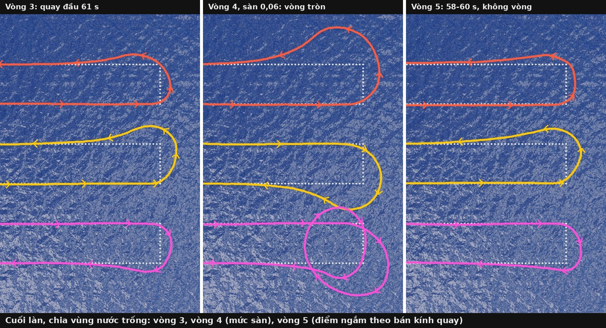<figcaption><b>Cuối làn, chia vùng nước trống.</b> Vòng 3 và vòng 5 quay gọn như nhau; vòng tròn chỉ xuất hiện ở vòng 4 khi bật mức sàn.</figcaption></figure>
      <figure>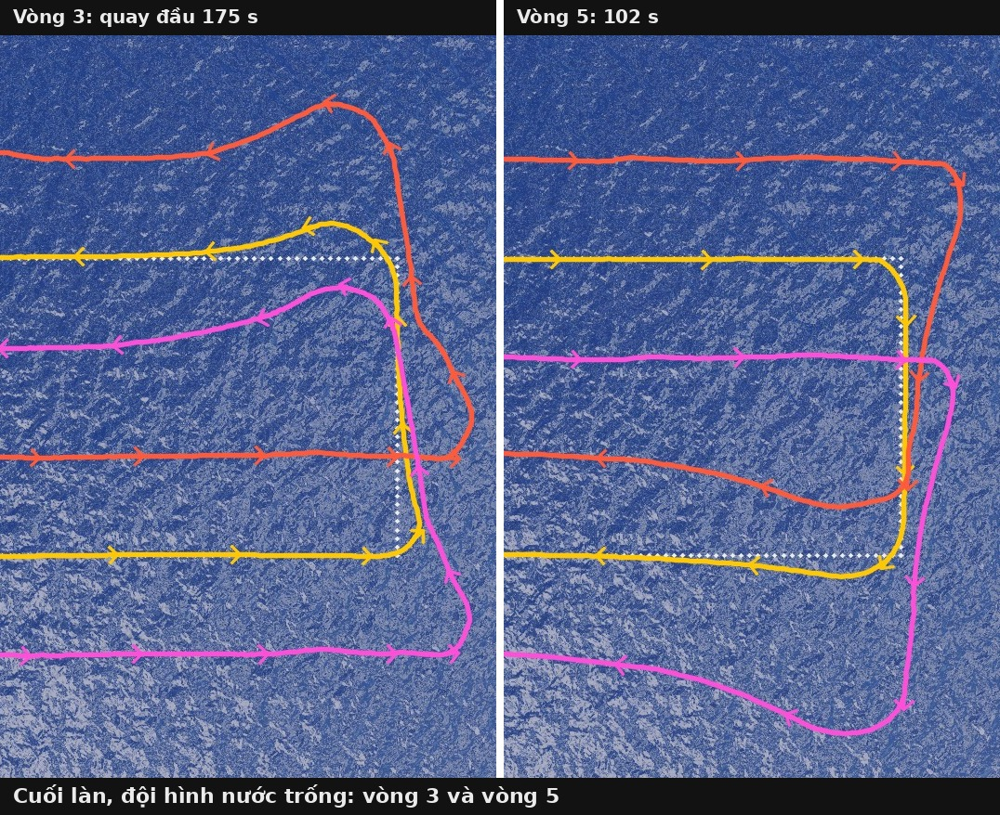<figcaption><b>Cuối làn, đội hình nước trống.</b> Tàu dẫn đầu (vàng) quay đầu gọn hơn ở vòng 5 (175 → 102 s). Hai tàu theo cắt qua vệt của nhau nhưng không cùng lúc (0 s dưới 3 m).</figcaption></figure>
      <figure>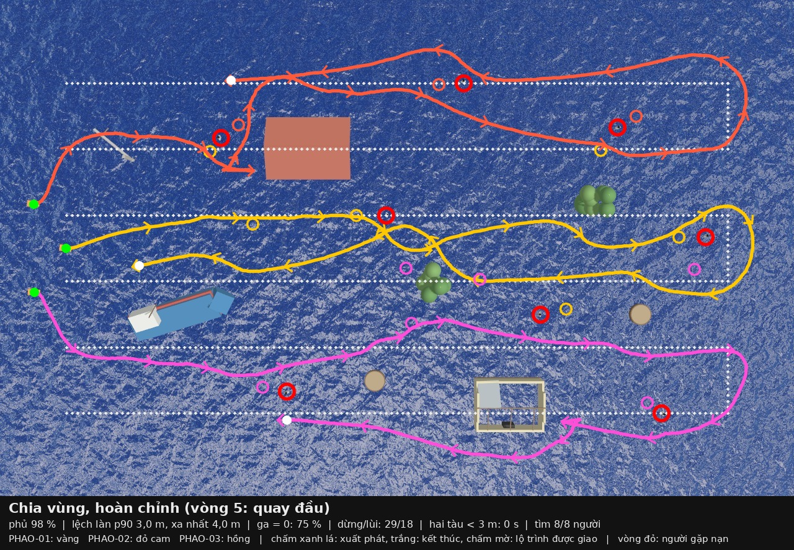<figcaption><b>Chia vùng hoàn chỉnh, vòng 5.</b> 8/8 người sau 374 s, phủ 98 %.</figcaption></figure>
      <figure>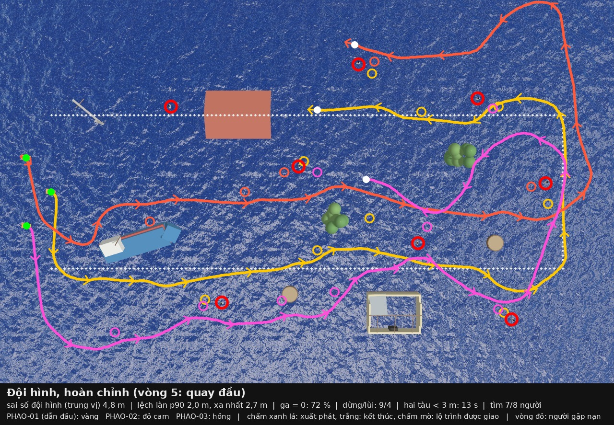<figcaption><b>Đội hình hoàn chỉnh, vòng 5.</b> 7/8 người, phủ 82,8 %. Các ảnh khác: <code>img/v5_*.jpg</code>.</figcaption></figure>
    </div>
  </section>

  <section>
    <h2>Vòng 4 (13/11): không cắt ga về 0 khi tàu còn phải bẻ lái</h2>
    <p class="prose">Ở vòng 3, phần lớn thời gian tàu lệch hướng quá 90° rơi vào lúc Pi gửi tốc độ 0 vì vượt tốc. Khi đó F407 đặt lại PID và trả bánh lái về giữa, tàu trôi. Vòng 4 chỉ sửa phía Pi (<code>Rasp_Pi/modules/navigation.py</code>, khóa mới <code>vehicle.min_steer_speed_mps</code>):</p>
    <ul class="prose">
      <li>Nếu đang vượt tốc mà tàu lệch hướng ≥ 20° hoặc đang bò quanh vật cản, Pi gửi tốc độ sàn 0,06 m/s (tức ga 0,06, mức mà PID mới nhân lệnh lái 2,5 lần) thay cho 0. Lý do ghi trong log là <code>overspeed_steer</code>.</li>
      <li>Tốc độ bò quanh vật cản cũng được chỉnh ga, nhưng không xuống dưới mức sàn.</li>
      <li>STOP, BACK, <code>obstacle_too_close</code>, giữ chỗ cạnh người, về bờ: vẫn dừng hẳn như cũ.</li>
      <li>Test: Pi 274 passed, 2 skipped, có thêm 2 test mới (vượt tốc khi phải quay thì nhận mức sàn; <code>obstacle_too_close</code> vẫn là 0).</li>
    </ul>
    <p class="prose">Mọi lần chạy dùng PID mới đã đưa vào firmware (mặc định của bo mô phỏng). 7 tình huống chạy một lần với mức sàn bật. Thêm 4 lần lặp cho các tình huống có vật cản và hoàn chỉnh, với mức sàn <b>tắt</b>; tức là cấu hình vòng 3, dùng để xem cùng một cấu hình chạy hai lần chênh nhau bao nhiêu.</p>

    <div class="table-wrap"><table>
      <thead><tr><th>Tình huống</th><th>Chỉ số</th><th>Vòng 3 (không sàn)</th><th>Lặp, không sàn</th><th>Vòng 4 (sàn 0,06)</th></tr></thead>
      <tbody>
        <tr><td rowspan="3">Chia vùng, nước trống</td><td>Ga = 0 · lệch hướng &gt; 90°</td><td class="n">22 % · 0 s</td><td class="n">—</td><td class="n">13 % · <span class="bad">30 s</span></td></tr>
        <tr><td>Lệch làn trung vị / xa nhất</td><td class="n">0,10 / 2,7 m</td><td class="n">—</td><td class="n"><span class="bad">0,27 / 10,0 m</span></td></tr>
        <tr><td>Phủ vùng · quãng đường</td><td class="n">100 % · 413 m</td><td class="n">—</td><td class="n">100 % · 496 m</td></tr>
        <tr><td rowspan="2">Đội hình, nước trống</td><td>Sai số chỗ · hai tàu &lt; 3 m</td><td class="n">2,5 m · 22 s</td><td class="n">—</td><td class="n"><span class="good">1,9 m</span> · 35 s</td></tr>
        <tr><td>Lệch làn tàu dẫn đầu xa nhất · phủ vùng</td><td class="n">2,2 m · 89,2 %</td><td class="n">—</td><td class="n"><span class="bad">7,0 m</span> · 100 %</td></tr>
        <tr><td>Đội hình, beacon 2,4 s</td><td>Sai số chỗ · &lt; 3 m · lệch xa nhất</td><td class="n">3,3 m · 22 s · 2,2 m</td><td class="n">—</td><td class="n">2,2 m · 18 s · <span class="bad">7,7 m</span></td></tr>
        <tr><td rowspan="3">Chia vùng, có vật cản</td><td>Phủ vùng · ga = 0</td><td class="n">96,9 % · 71 %</td><td class="n">99,1 % · 69 %</td><td class="n">98,8 % · <span class="good">21 %</span></td></tr>
        <tr><td>Lệch hướng &gt; 90° · lệch làn xa nhất</td><td class="n">55 s · 8,6 m</td><td class="n">77 s · 7,0 m</td><td class="n"><span class="bad">144 s · 11,5 m</span></td></tr>
        <tr><td>Dừng/lùi · hai tàu &lt; 3 m</td><td class="n">31/15 · 43 s</td><td class="n">29/9 · 0 s</td><td class="n"><span class="bad">72/23 · 47 s</span></td></tr>
        <tr><td rowspan="3">Đội hình, có vật cản</td><td>Phủ vùng · sai số chỗ</td><td class="n">67,3 % · 4,5 m</td><td class="n">78,4 % · 4,5 m</td><td class="n">83,1 % · 4,0 m</td></tr>
        <tr><td>Lệch hướng &gt; 90° · ga = 0</td><td class="n">163 s · 63 %</td><td class="n">153 s · 62 %</td><td class="n"><span class="good">17 s · 42 %</span></td></tr>
        <tr><td>Dừng/lùi · hai tàu &lt; 3 m</td><td class="n">36/8 · 76 s</td><td class="n">33/8 · 41 s</td><td class="n"><span class="bad">255/64</span> · 43 s</td></tr>
        <tr><td rowspan="3">Chia vùng, hoàn chỉnh</td><td>Người tìm thấy · nửa số người</td><td class="n">8/8 (344 s) · 256 s</td><td class="n">7/8 · 199 s</td><td class="n"><span class="good">8/8 (453 s) · 163 s</span></td></tr>
        <tr><td>Phủ vùng · ga = 0</td><td class="n">94,0 % · 75 %</td><td class="n">81,3 % · 78 %</td><td class="n"><span class="good">98,7 % · 18 %</span></td></tr>
        <tr><td>Lệch hướng &gt; 90° · lệch làn xa nhất</td><td class="n">72 s · 3,0 m</td><td class="n">312 s · 7,0 m</td><td class="n">189 s · <span class="bad">11,0 m</span></td></tr>
        <tr><td rowspan="3">Đội hình, hoàn chỉnh</td><td>Người tìm thấy · phủ vùng</td><td class="n">5/8 · 66,5 %</td><td class="n">7/8 · 70,7 %</td><td class="n">6/8 · 73,0 %</td></tr>
        <tr><td>Sai số chỗ · hai tàu &lt; 3 m</td><td class="n">6,0 m · 55 s</td><td class="n">4,1 m · 145 s</td><td class="n">6,6 m · 92 s</td></tr>
        <tr><td>Lệch hướng &gt; 90° · lệch làn xa nhất</td><td class="n">19 s · 2,4 m</td><td class="n">77 s · 2,6 m</td><td class="n"><span class="bad">149 s · 14,2 m</span></td></tr>
      </tbody>
    </table></div>

    <h3>Kết luận vòng 4</h3>
    <div class="verdicts">
      <div class="verdict"><span class="pill good">Có tác dụng</span><b>Tàu không còn đứng ì</b><span>Thời gian ga = 0 giảm từ 60–78 % xuống 12–42 %. Tàu đi được nhiều hơn 20–50 %, phủ vùng rộng hơn, tìm người sớm hơn (chia vùng hoàn chỉnh: nửa số người sau 163 s, trước 199–256 s).</span></div>
      <div class="verdict"><span class="pill bad">Làm xấu hơn</span><b>Bám làn và vòng quay</b><span>Lệch làn xa nhất lớn hơn ở cả 7/7 tình huống (nước trống 2,7 → 10,0 m). Ở ga 0,06 tàu mô phỏng vẫn chạy 0,45–0,5 m/s nhưng chỉ quay được khoảng 5°/s, nên bán kính quay khoảng 6 m và tàu vòng thành vòng tròn khi về làn (hình bên dưới).</span></div>
      <div class="verdict"><span class="pill warn">Không giảm</span><b>Mất hướng</b><span>Số giây lệch quá 90° không giảm, mà chuyển từ lúc ga 0 sang lúc ga ở mức sàn: 90–99 % số giây đó giờ là <code>overspeed_steer</code>. Chỉ đội hình có vật cản là giảm hẳn (163 → 17 s).</span></div>
    </div>
    <p class="prose"><b>Cấu hình để lại:</b> <code>min_steer_speed_mps: 0.0</code> (tắt), tức hành vi như vòng 3. Code vẫn giữ để thử trên tàu thật. Trên tàu thật, ở ga thấp tàu chậm hơn nhiều so với mô phỏng (ESC có vùng chết tới 1550 µs), nên có thể mức sàn lại có lợi. Trong mô phỏng hiện tại, giới hạn thật là bán kính quay khoảng 6 m ở mọi mức ga; PID hay cách Pi chọn ga đều không vượt qua được. Muốn biết chắc phải đo trên nước tốc độ và tốc độ quay ở ga 0,05–0,15, rồi chỉnh lực đẩy trong <code>model.sdf</code> cho khớp.</p>
    <p class="prose"><b>Độ dao động giữa hai lần chạy cùng cấu hình rất lớn</b> (cột "Lặp, không sàn" so với "Vòng 3"): chia vùng hoàn chỉnh lệch hướng quá 90° 72 s so với 312 s, phủ 94 % so với 81 %; đội hình hoàn chỉnh tìm 5/8 so với 7/8 người. Chênh lệch dưới mức này (khoảng ±15 % phủ vùng, ±2 người) không nên coi là do thay đổi code.</p>
    <div class="figs">
      <figure>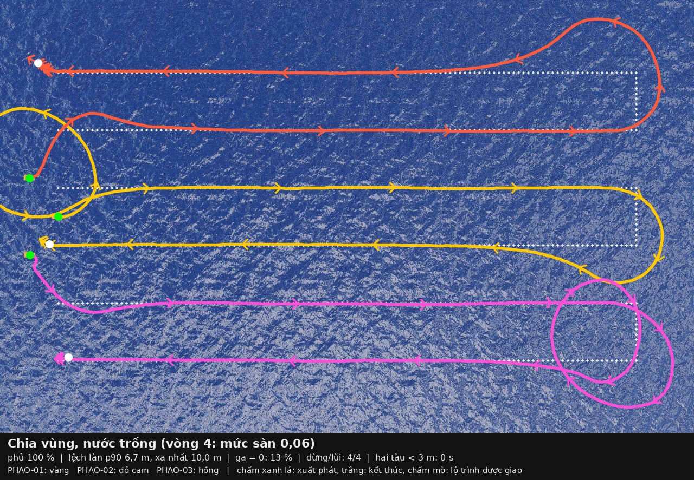<figcaption><b>Nước trống, mức sàn 0,06.</b> PHAO-01 và PHAO-03 vòng tròn bán kính khoảng 6 m khi về làn. So với vòng 3: <code>img/v3_01_trong_chia_vung.jpg</code>.</figcaption></figure>
      <figure>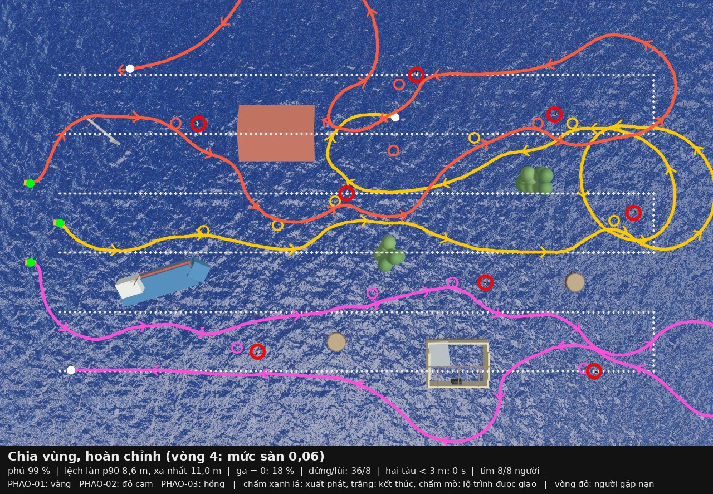<figcaption><b>Chia vùng hoàn chỉnh, mức sàn.</b> 8/8 người, phủ 98,7 %, nhưng lệch xa nhất 11,0 m.</figcaption></figure>
      <figure>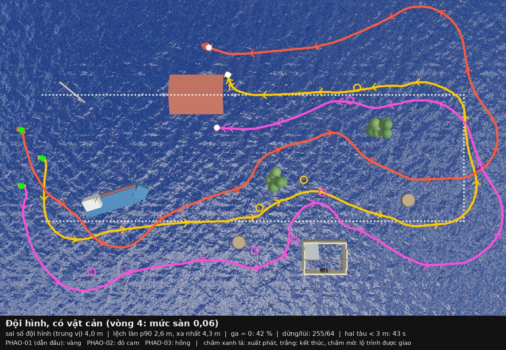<figcaption><b>Đội hình có vật cản, mức sàn.</b> Lệch hướng quá 90° chỉ 17 s (trước 153–163 s), nhưng dừng/lùi tăng lên 255/64.</figcaption></figure>
      <figure>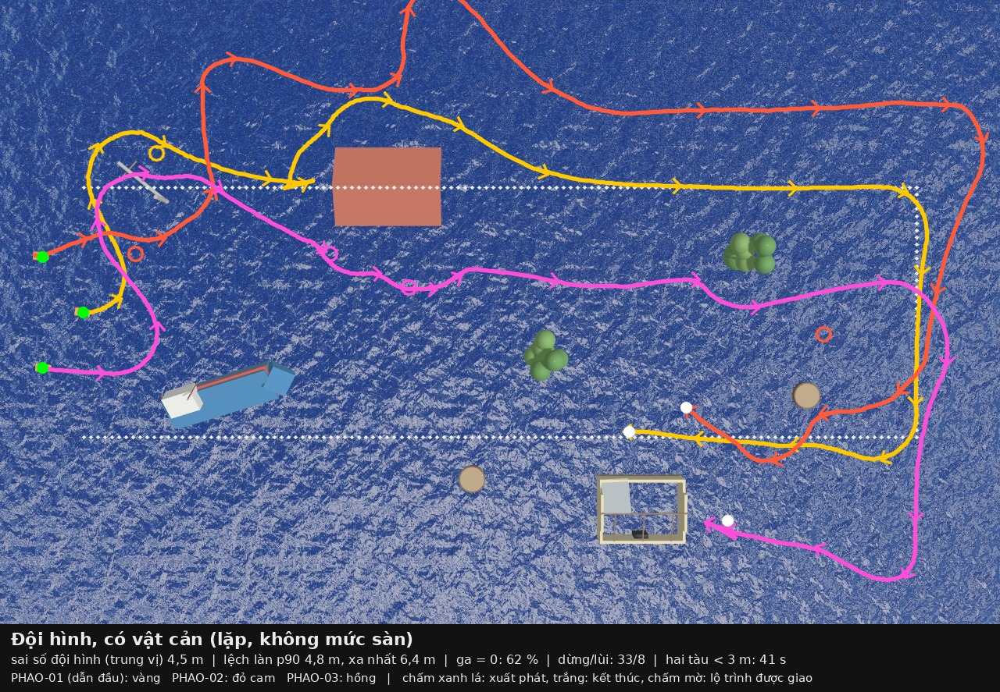<figcaption><b>Cùng tình huống, lặp không mức sàn.</b> Các ảnh lặp khác: <code>img/v4_*_khong_san.jpg</code>.</figcaption></figure>
    </div>
  </section>

  <section>
    <h2>Vòng 3 (13/11): PID hướng mới, so sánh ba vòng</h2>
    <p class="prose">Vòng 3 chạy lại đúng bộ của vòng 2 (cùng code Pi, không mở cửa sổ Gazebo), chỉ khác vòng giữ hướng của F407 mô phỏng: <code>fleet_compare.py run --heading-gains tuned</code>. Log của cả 21 bo F407 mô phỏng (7 lần chạy × 3 tàu) đều ghi "heading gains: tuned". Sau vòng 3, PID mới đã được đưa vào firmware (<code>STM32F4/App/app_config.h</code>, <code>heading_controller.c/.h</code>, <code>control.c</code>; build Debug được) nhưng <b>chưa nạp lên bo và chưa thử trên nước</b>, chưa commit.</p>

    <h3>PID mới: kết quả thử riêng một tàu</h3>
    <p class="prose">Phiên PID thử riêng vòng giữ hướng của F407. Script đóng vai Pi, gửi thẳng <code>$NAV AUTO</code>. Mỗi mức ga 0,08 / 0,15 / 0,25 / 0,35 / 0,5 có 5 bước hướng (+30°, −30°, +90°, −90°, 180°) và một bài bám sine ±30°. Chi tiết, CSV và patch đề xuất: <code>media/simulation/pid/README.md</code>.</p>
    <div class="table-wrap"><table>
      <thead><tr><th></th><th>Firmware hiện tại</th><th>Đề xuất (tuned)</th></tr></thead>
      <tbody>
        <tr><td>Hệ số</td><td class="n">Kp 0,020 · Ki 0,002 · Kd 0,008</td><td class="n">Kp 0,10 · Ki 0,010 · Kd 0,008; tích phân chỉ khi lệch &lt; 15°; u × tới 3 khi ga &lt; 0,15</td></tr>
        <tr><td>Vào dải ±5°</td><td class="n">8/25 ca</td><td class="n"><span class="good">24/25 ca</span></td></tr>
        <tr><td>Lên 10–90 %, bước 30°</td><td class="n">7–18 s</td><td class="n"><span class="good">khoảng 3 s</span></td></tr>
        <tr><td>Vượt đích</td><td class="n">6–9°</td><td class="n"><span class="good">≤ 3,2°</span></td></tr>
        <tr><td>Sai số cuối</td><td class="n">6–11°</td><td class="n"><span class="good">≤ 2,1°</span></td></tr>
        <tr><td>Bám sine ±30° (RMS / trễ)</td><td class="n">22° / 4,5–5 s</td><td class="n"><span class="good">7–14° / 0,8–2 s</span></td></tr>
      </tbody>
    </table></div>
    <figure><figcaption><b>Đáp ứng bước, firmware (xám) và tuned (xanh), nét đứt là hướng đích.</b> Hàng là mức ga 0,08–0,5, cột là các bước và bài sine. Ca 180° ở ga 0,08 không kịp vì thuyền chỉ quay được khoảng 5°/s; đó là giới hạn vật lý của model, không phải lỗi PID.</figcaption></figure>

    <h3>Mọi tình huống qua ba vòng</h3>
    <div class="table-wrap"><table>
      <thead><tr><th>Tình huống</th><th>Chỉ số</th><th>Vòng 1</th><th>Vòng 2</th><th>Vòng 3 (PID mới)</th></tr></thead>
      <tbody>
        <tr><td rowspan="3">Chia vùng, nước trống</td><td>Lệch làn trung vị / xa nhất</td><td class="n">0,80 / 4,0 m</td><td class="n">0,33 / 3,1 m</td><td class="n"><span class="good">0,10 / 2,7 m</span></td></tr>
        <tr><td>Ga = 0</td><td class="n">76 %</td><td class="n">25 %</td><td class="n">22 %</td></tr>
        <tr><td>Phủ vùng · hai tàu &lt; 3 m</td><td class="n">100 % · 0 s</td><td class="n">100 % · 0 s</td><td class="n">100 % · 0 s</td></tr>
        <tr><td rowspan="3">Đội hình, nước trống</td><td>Sai số chỗ (trung vị)</td><td class="n">9,0 m</td><td class="n">2,6 m</td><td class="n">2,5 m</td></tr>
        <tr><td>Hai tàu &lt; 3 m</td><td class="n">39 s</td><td class="n">60 s</td><td class="n"><span class="good">22 s</span></td></tr>
        <tr><td>Lệch làn tàu dẫn đầu · phủ vùng</td><td class="n">0,64 m · 99,9 %</td><td class="n">0,21 m · 100 %</td><td class="n">0,10 m · <span class="warn">89,2 %</span></td></tr>
        <tr><td rowspan="2">Đội hình, beacon 2,4 s</td><td>Sai số chỗ · hai tàu &lt; 3 m</td><td class="n">—</td><td class="n">2,0 m · 0 s</td><td class="n"><span class="bad">3,3 m · 22 s</span></td></tr>
        <tr><td>Lệch làn tàu dẫn đầu · phủ vùng</td><td class="n">—</td><td class="n">0,23 m · 93,6 %</td><td class="n">0,12 m · 94,4 %</td></tr>
        <tr><td rowspan="3">Chia vùng, có vật cản</td><td>Phủ vùng</td><td class="n">99,7 %</td><td class="n">86,6 %</td><td class="n">96,9 %</td></tr>
        <tr><td>Lệch làn trung vị / xa nhất</td><td class="n">1,23 / 7,0 m</td><td class="n">1,28 / 6,4 m</td><td class="n">0,75 / <span class="bad">8,6 m</span></td></tr>
        <tr><td>Hai tàu &lt; 3 m · dừng/lùi</td><td class="n">0 s · 40/17</td><td class="n">0 s · 23/21</td><td class="n"><span class="bad">43 s</span> · 31/15</td></tr>
        <tr><td rowspan="3">Đội hình, có vật cản</td><td>Sai số chỗ</td><td class="n">10,9 m</td><td class="n">6,6 m</td><td class="n"><span class="good">4,5 m</span></td></tr>
        <tr><td>Phủ vùng · hai tàu &lt; 3 m</td><td class="n">88,4 % · 80 s</td><td class="n">83,4 % · 30 s</td><td class="n"><span class="bad">67,3 % · 76 s</span></td></tr>
        <tr><td>Lệch xa nhất của tàu dẫn đầu · dừng/lùi</td><td class="n">8,9 m · 96/33</td><td class="n">2,0 m · 20/10</td><td class="n"><span class="bad">6,3 m</span> · 36/8</td></tr>
        <tr><td rowspan="3">Chia vùng, hoàn chỉnh</td><td>Người tìm thấy</td><td class="n">8/8, người cuối 525 s</td><td class="n">7/8</td><td class="n"><span class="good">8/8, người cuối 344 s</span></td></tr>
        <tr><td>Phủ vùng · hai tàu &lt; 3 m</td><td class="n">90,0 % · 28 s</td><td class="n">87,3 % · 26 s</td><td class="n"><span class="good">94,0 % · 0 s</span></td></tr>
        <tr><td>Lệch làn trung vị / xa nhất</td><td class="n">1,40 / 5,9 m</td><td class="n">1,65 / 6,0 m</td><td class="n"><span class="good">0,77 / 3,0 m</span></td></tr>
        <tr><td rowspan="3">Đội hình, hoàn chỉnh</td><td>Người tìm thấy · nửa số người</td><td class="n">6/8 · 397 s</td><td class="n">5/8 · 472 s</td><td class="n">5/8 · 372 s</td></tr>
        <tr><td>Sai số chỗ</td><td class="n">4,6 m</td><td class="n">2,8 m</td><td class="n"><span class="bad">6,0 m</span></td></tr>
        <tr><td>Phủ vùng · hai tàu &lt; 3 m</td><td class="n">69,3 % · 59 s</td><td class="n">58,8 % · 54 s</td><td class="n">66,5 % · 55 s</td></tr>
      </tbody>
    </table></div>
    <p class="prose" style="font-size:0.88rem;color:var(--muted)">Vòng 1: code ban đầu. Vòng 2: chỉnh ga, né sớm, tàu dẫn đầu chậm lại. Vòng 3: vòng 2 cộng PID hướng mới. Hai lần "hoàn chỉnh" của vòng 1 chạy có cửa sổ Gazebo (khoảng 0,35 lần thời gian thực) nên chỉ để tham khảo; vòng 2 và 3 đều không mở cửa sổ. Mỗi ô là một lần chạy 600 s.</p>

    <h3>Giữ hướng theo lệnh của Pi</h3>
    <p class="prose">Đo sai lệch giữa hướng Pi lệnh và hướng thật mỗi giây, chia theo mức ga lúc đó (script <code>heading_loss.py</code>, đọc <code>pi.log</code> và <code>track.csv</code>). Trung vị sai lệch, vòng 2 → vòng 3:</p>
    <div class="table-wrap"><table>
      <thead><tr><th>Tình huống</th><th>Ga 0,1–0,2</th><th>Ga ≥ 0,2</th><th>Ga = 0</th><th>Số giây lệch &gt; 90°</th></tr></thead>
      <tbody>
        <tr><td>Chia vùng, nước trống</td><td class="n"><span class="good">2,1 → 0,7°</span></td><td class="n">25,3 → 4,1°</td><td class="n">20,4 → 2,8°</td><td class="n">0 → 0 s</td></tr>
        <tr><td>Đội hình, nước trống</td><td class="n"><span class="good">4,2 → 1,2°</span></td><td class="n">19,7 → 3,4°</td><td class="n">8,5 → 2,5°</td><td class="n">0 → 5 s</td></tr>
        <tr><td>Đội hình, beacon 2,4 s</td><td class="n"><span class="good">6,2 → 1,2°</span></td><td class="n">15,8 → 4,4°</td><td class="n">12,0 → 2,9°</td><td class="n">19 → 7 s</td></tr>
        <tr><td>Chia vùng, có vật cản</td><td class="n"><span class="good">21,6 → 5,9°</span></td><td class="n">16,3 → 2,8°</td><td class="n">16,9 → 4,4°</td><td class="n"><span class="bad">21 → 55 s</span></td></tr>
        <tr><td>Đội hình, có vật cản</td><td class="n"><span class="good">16,6 → 6,8°</span></td><td class="n">13,1 → 5,6°</td><td class="n">19,1 → 13,9°</td><td class="n"><span class="bad">118 → 163 s</span></td></tr>
        <tr><td>Chia vùng, hoàn chỉnh</td><td class="n">21,7 → 28,3°</td><td class="n">24,6 → 6,0°</td><td class="n">22,9 → 17,5°</td><td class="n">63 → 72 s</td></tr>
        <tr><td>Đội hình, hoàn chỉnh</td><td class="n"><span class="good">20,8 → 7,5°</span></td><td class="n">13,7 → 2,9°</td><td class="n">18,2 → 4,7°</td><td class="n">24 → 19 s</td></tr>
      </tbody>
    </table></div>

    <h3>Kết luận: PID mới có giúp đội tàu không?</h3>
    <div class="verdicts">
      <div class="verdict"><span class="pill good">Có, rõ ràng</span><b>Tàu theo đúng hướng Pi lệnh</b><span>Khi còn ga, sai lệch hướng trung vị giảm 3–4 lần ở 6/7 tình huống (nước trống 2,1 → 0,7°, có vật cản 21,6 → 5,9°). Lệch làn trên nước trống còn 0,10 m, tức 1/8 của vòng 1.</span></div>
      <div class="verdict"><span class="pill good">Có</span><b>Mô phỏng hoàn chỉnh, chia vùng</b><span>Tìm đủ 8/8 người, người cuối sau 344 s (vòng 1: 525 s). Lệch xa nhất 6,0 → 3,0 m, không lần nào hai tàu sát nhau. Đây là kết quả tốt nhất của cả ba vòng.</span></div>
      <div class="verdict"><span class="pill warn">Chưa kết luận</span><b>Đội hình, và né vật cản</b><span>Lúc tốt lúc kém: đội hình có vật cản sai số 6,6 → 4,5 m nhưng phủ 83 → 67 %; đội hình hoàn chỉnh sai số 2,8 → 6,0 m. Mỗi tình huống mới chạy một lần, mà độ dao động giữa các lần cỡ bằng mức thay đổi.</span></div>
      <div class="verdict"><span class="pill bad">Còn sai</span><b>Mất hướng khi Pi cắt ga</b><span>Phần lớn số giây lệch quá 90° rơi vào lúc Pi gửi tốc độ 0 vì vượt tốc. F407 khi đó đặt lại PID và trả bánh lái về giữa, nên PID nào cũng không giữ được hướng. Phải sửa phía Pi (mục bên dưới).</span></div>
    </div>
    <p class="prose"><b>Về việc nạp vào firmware:</b> PID mới cải thiện đúng thứ nó nhắm tới (giữ hướng) và không làm hỏng tình huống nào một cách có hệ thống. Các chỗ kém hơn ở đội hình và vật cản dao động lẫn lộn, không theo một hướng. Trong mô phỏng, nạp được. Nhưng thủy động trong model là đoán: thuyền mô phỏng chạy nhanh gấp đôi lệnh và phản ứng lái dưới 0,5 s, servo lý tưởng. Kp 0,10 trên thuyền thật có servo chậm hơn có thể dao động. Nên nạp rồi thử trên nước theo các bước ở mục 6 của <code>pid/README.md</code> (bước ±30°, ±90° ở ga 0,15 và 0,25; dao động thì hạ Kp về 0,06 trước) trước khi dùng trong thi đấu.</p>

    <h3>Phần mất hướng còn lại: do Pi cắt ga, không phải do PID</h3>
    <p class="prose">Phần lớn số giây tàu lệch quá 90° so với lệnh rơi vào lúc Pi gửi <code>AUTO 0</code> vì vượt tốc (<code>overspeed</code>): <b>111/163 s</b> ở đội hình có vật cản, <b>36/55 s</b> ở chia vùng có vật cản (vòng 2 cũng vậy: 92/118 s). Tình huống điển hình: tàu bò gần vật cản ở 0,15 m/s nhưng vẫn trôi 0,23 m/s, bộ chống vượt tốc cắt ga, F407 nhận tốc độ 0 nên đặt lại PID và trả bánh lái về giữa, tàu trôi lệch hướng. PID mới không sửa được phần này. Ở vòng này tôi không đổi logic ga của Pi; số liệu cho thấy đây là nguyên nhân còn lại, nên đề xuất cho vòng sau:</p>
    <ul class="prose">
      <li>Khi đang bò quanh vật cản, Pi giữ một mức ga tối thiểu để còn bẻ lái, thay vì cắt hẳn về 0, và chỉ cắt khi thật sự sắp chạm. Hoặc cho phần chỉnh ga áp dụng cả lúc bò, vì PID mới đã nhân lệnh lái khi ga thấp.</li>
      <li>Hai cách đều đổi hành vi gần vật cản trên tàu thật, nên cần thử trong mô phỏng (mỗi tình huống 2–3 lần) rồi thử trên nước.</li>
    </ul>

    <h3>Đường đi trên ảnh Gazebo: vòng 2 (trái) và vòng 3 (phải)</h3>
    <div class="figs">
      <figure>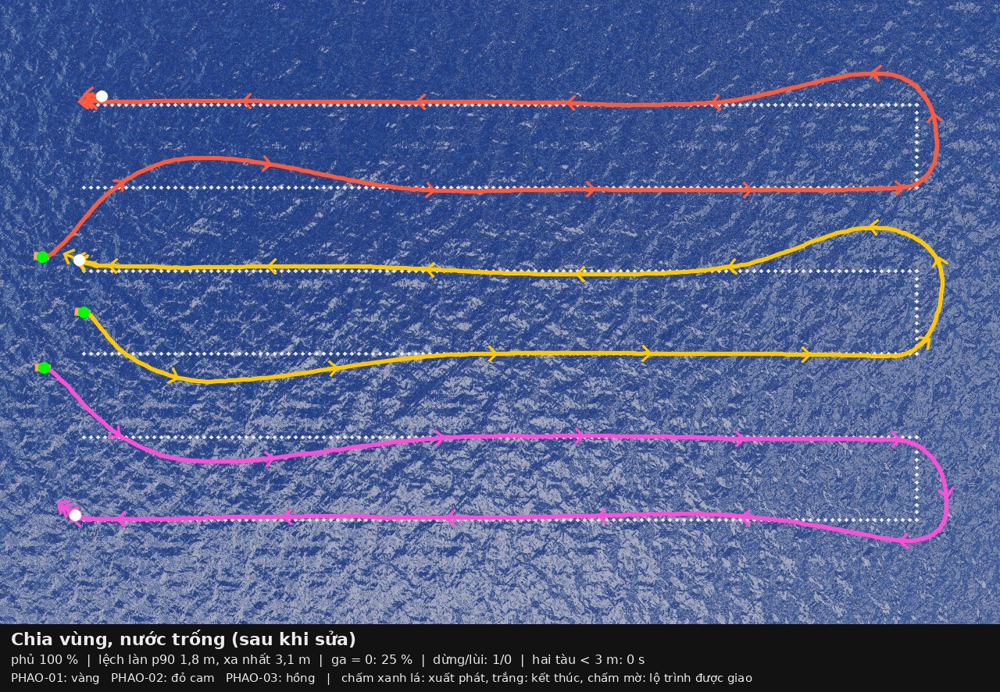<figcaption><b>Chia vùng, nước trống, vòng 2.</b> Lệch làn trung vị 0,33 m.</figcaption></figure>
      <figure>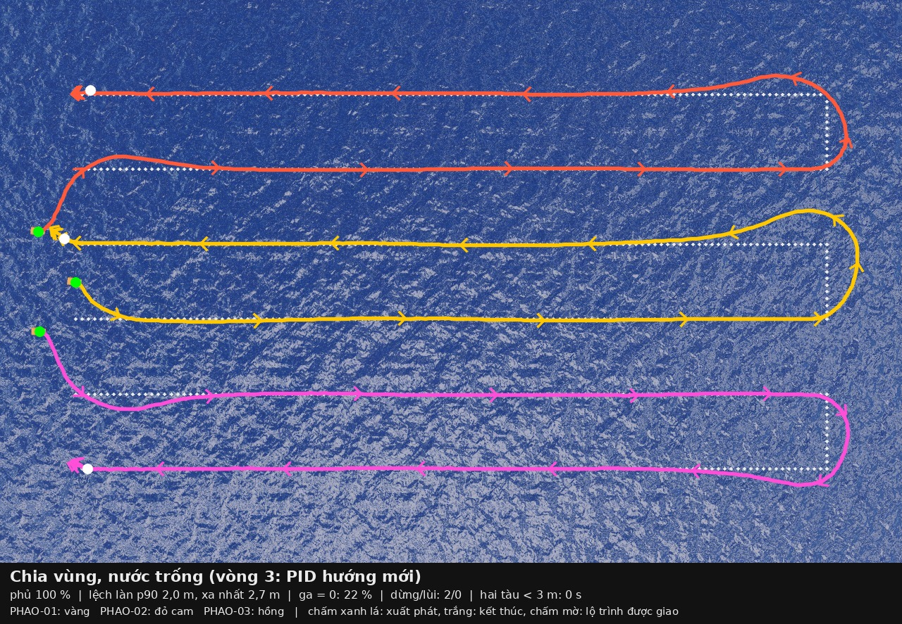<figcaption><b>Vòng 3.</b> 0,10 m: thẳng trên làn, chỉ còn lệch ở khúc quay đầu.</figcaption></figure>
      <figure>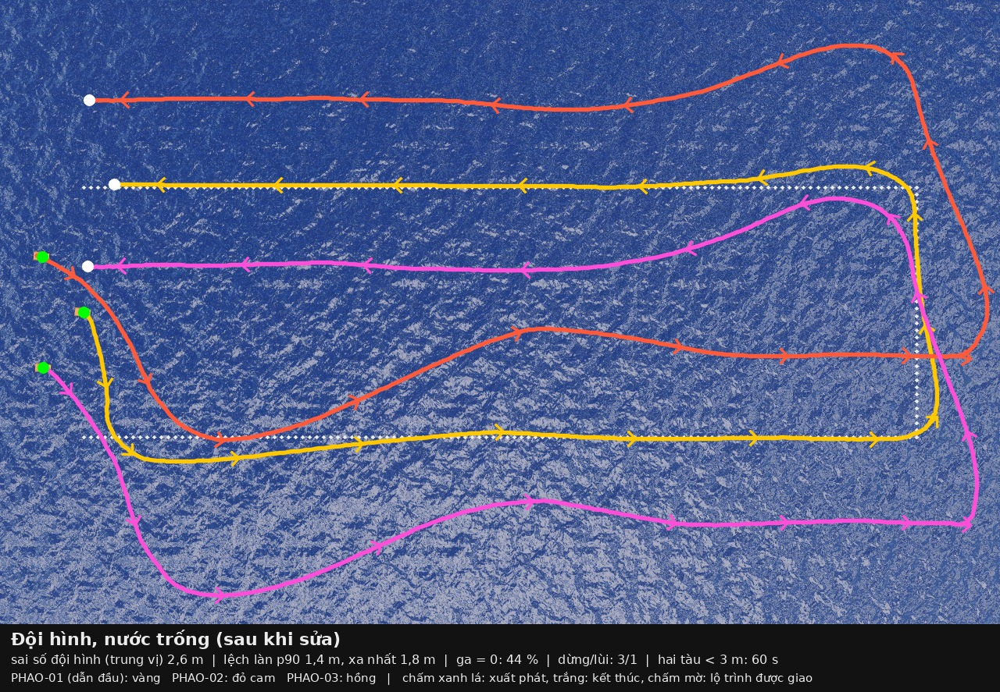<figcaption><b>Đội hình, nước trống, vòng 2.</b> Sai số 2,6 m, hai tàu sát nhau 60 s.</figcaption></figure>
      <figure>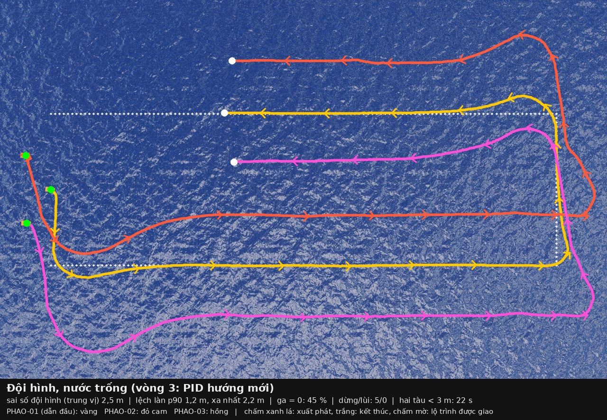<figcaption><b>Vòng 3.</b> 2,5 m, sát nhau 22 s.</figcaption></figure>
      <figure>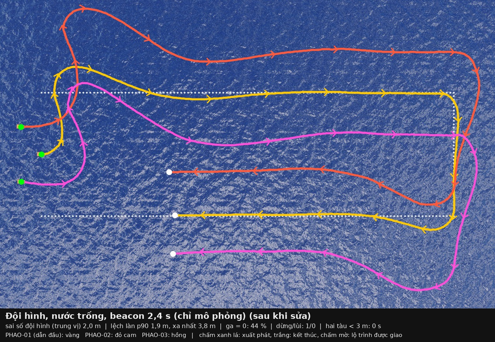<figcaption><b>Đội hình, beacon 2,4 s, vòng 2.</b> 2,0 m, 0 s sát nhau.</figcaption></figure>
      <figure>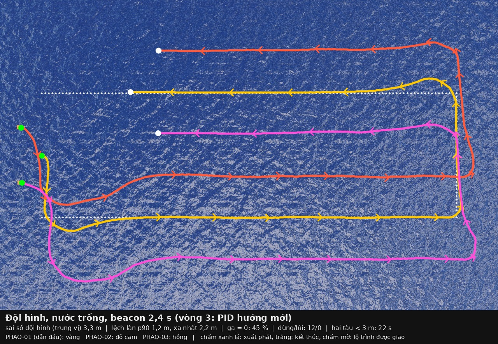<figcaption><b>Vòng 3.</b> 3,3 m, 22 s sát nhau.</figcaption></figure>
      <figure>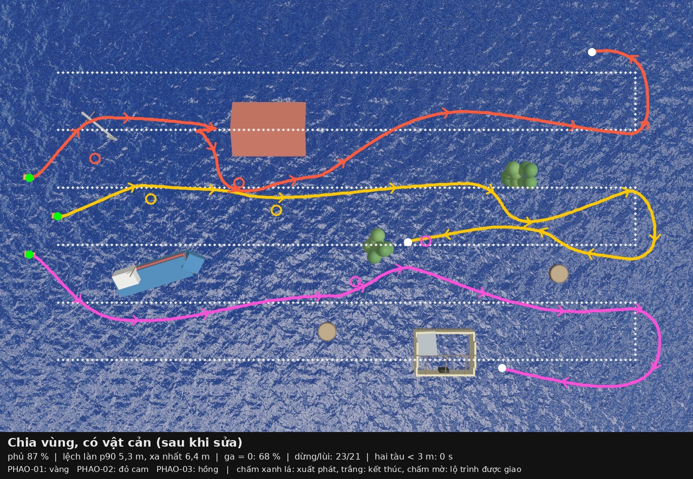<figcaption><b>Chia vùng, có vật cản, vòng 2.</b> Phủ 86,6 %.</figcaption></figure>
      <figure>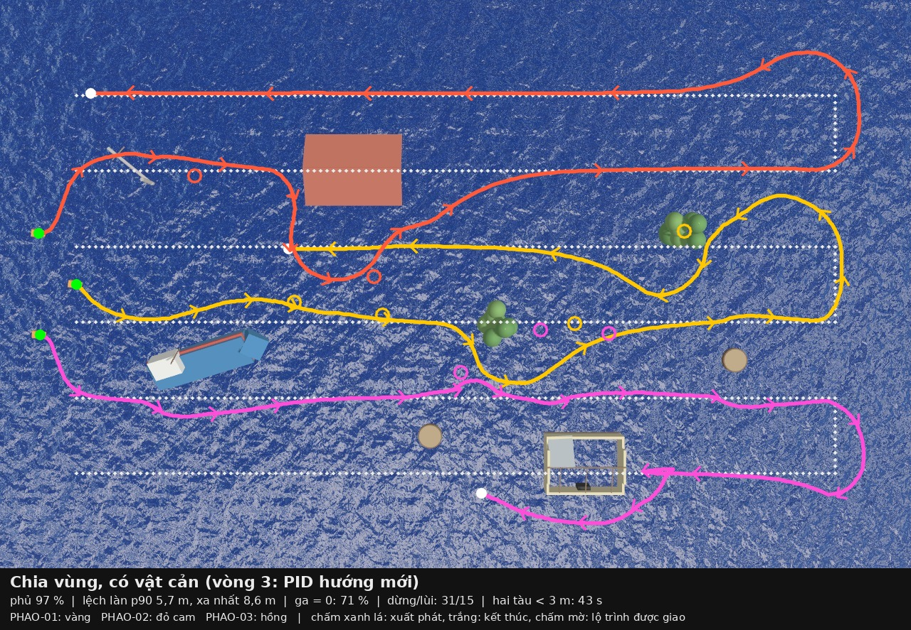<figcaption><b>Vòng 3.</b> Phủ 96,9 %, nhưng lệch xa nhất 8,6 m quanh nhà ngập.</figcaption></figure>
      <figure>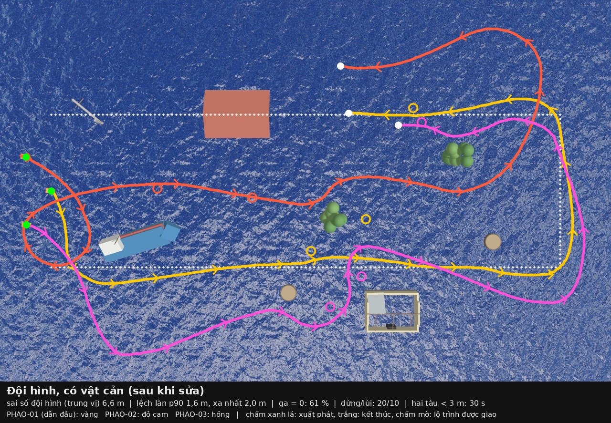<figcaption><b>Đội hình, có vật cản, vòng 2.</b> Sai số 6,6 m, phủ 83,4 %.</figcaption></figure>
      <figure>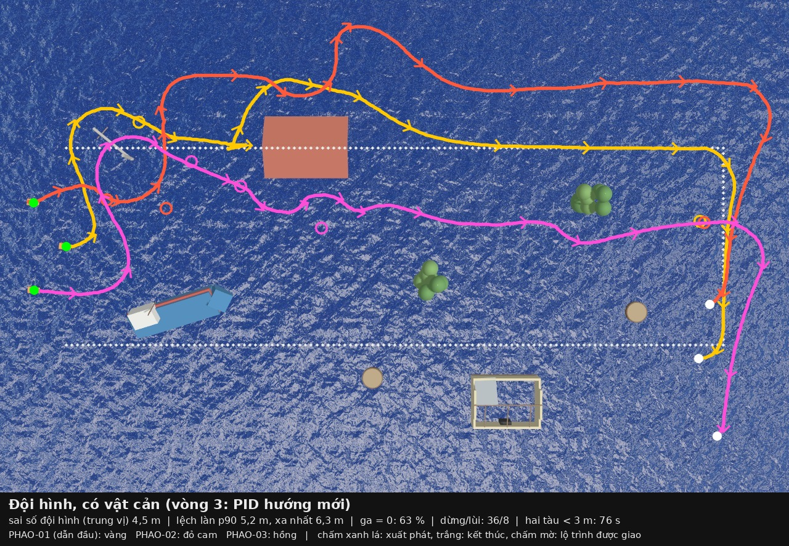<figcaption><b>Vòng 3.</b> Sai số 4,5 m, phủ 67,3 %.</figcaption></figure>
      <figure>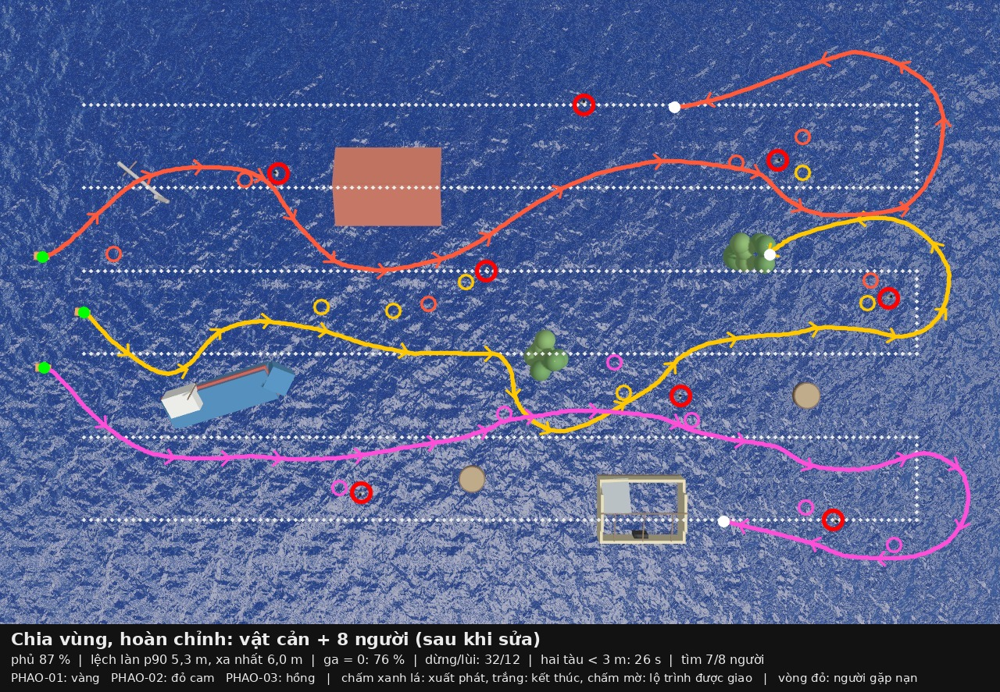<figcaption><b>Chia vùng, hoàn chỉnh, vòng 2.</b> 7/8 người, lệch xa nhất 6,0 m.</figcaption></figure>
      <figure>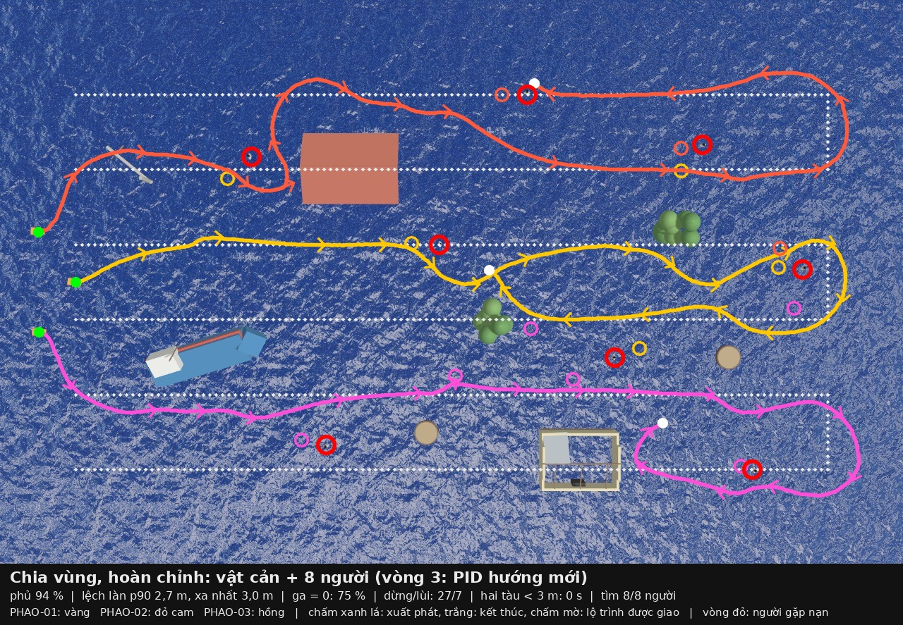<figcaption><b>Vòng 3.</b> 8/8 người sau 344 s, lệch xa nhất 3,0 m.</figcaption></figure>
      <figure>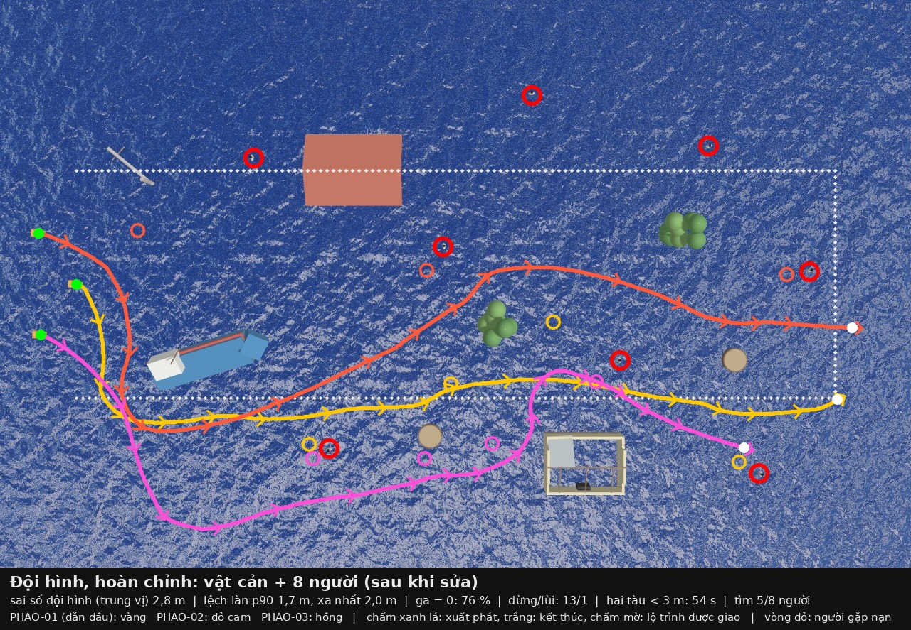<figcaption><b>Đội hình, hoàn chỉnh, vòng 2.</b> 5/8 người, sai số 2,8 m.</figcaption></figure>
      <figure>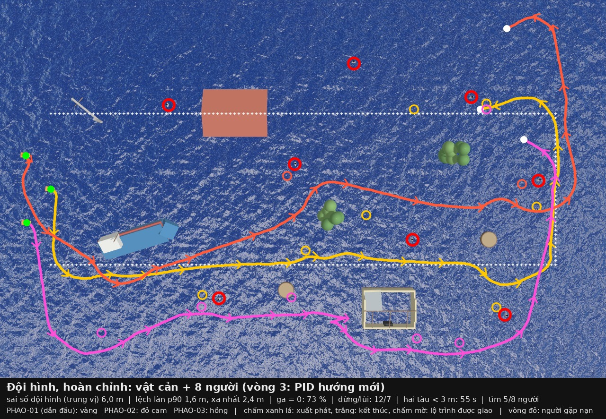<figcaption><b>Vòng 3.</b> 5/8 người (nửa số người sớm hơn 100 s), sai số 6,0 m.</figcaption></figure>
    </div>
    <div class="figs">
      <figure><video src="video/web_admin_chia_vung_phong_to_v3.mp4" controls muted playsinline preload="metadata"></video><figcaption><b>Web admin, chia vùng, vòng 3</b> (×8). Đầy đủ: <code>web_admin_chia_vung_v3.mp4</code>; từ trên xuống: <code>gazebo_tren_xuong_chia_vung_v3.mp4</code>.</figcaption></figure>
      <figure><video src="video/web_admin_doi_hinh_phong_to_v3.mp4" controls muted playsinline preload="metadata"></video><figcaption><b>Web admin, đội hình, vòng 3</b> (×8). Vòng 3 không quay cửa sổ Gazebo; video cửa sổ vẫn là bản <code>_v2</code>.</figcaption></figure>
    </div>
  </section>

  <section>
    <h2>Vòng 2 (13/11): chỉnh ga, né sớm, tàu dẫn đầu chậm lại</h2>
    <p class="prose">Anh nhận xét ba điểm sau vòng 1: phao né vật cản quá xa, bám làn chưa tốt, và đội hình giữ chỗ kém. Anh cũng hỏi chia sẻ vị trí giữa các tàu có giúp không. Từ log vòng 1, tôi tìm ra nguyên nhân chung: ở 50 % ga, phao mô phỏng chạy 0,9–1 m/s, gấp đôi lệnh 0,5 m/s. Bộ chống vượt tốc vì vậy cắt ga về 0 tới <b>76–80 % thời gian</b>. F407 chỉ bẻ lái được khi còn ga, nên mỗi lần bị cắt ga phao trôi theo sóng. Vòng 2 gồm bốn thay đổi; mọi lần chạy đều không mở cửa sổ Gazebo (lý do ở mục "Điều mô phỏng cho thấy").</p>
    <div class="fix">
      <b>1. Chỉnh ga mượt thay cho cắt ga</b>
      <span>Pi học xem phao chạy nhanh hơn lệnh bao nhiêu (tốc độ GPS chia cho tốc độ đã gửi, chỉ đo khi đã chạy thẳng ít nhất 8 s), rồi gửi tốc độ chia cho tỉ số đó. Chỉnh ga chỉ được giảm ga, không bao giờ tăng; tàu thật chậm hơn lệnh thì giữ nguyên như cũ. Chỉ áp dụng khi đang chạy theo lộ trình hoặc đội hình. Khi phao bò quanh vật cản thì giữ lệnh cũ: ở 0,03 ga F407 không bẻ lái được, và phao đi thành vòng tròn cạnh nhà ngập.</span>
      <span class="where">Rasp_Pi/modules/navigation.py TRIM_* · config/settings.yaml vehicle.speed_trim · test_navigation.py</span>
    </div>
    <div class="fix">
      <b>2. Né vật cản từ sớm kiểu ArduPilot BendyRuler</b>
      <span>Khi đường tới điểm ngắm bị chặn trong 4 m (cộng quãng phanh), phao chọn hướng gần đường cũ nhất mà vẫn qua cách thân 0,5 m, thử từng bước 10° tới ±90°, và giữ bên đã chọn để không đổi qua đổi lại. Logic dừng và lùi cũ vẫn giữ làm dự phòng.</span>
      <span class="where">navigation.py _detour · settings.yaml planner.avoid_lookahead_m, avoid_margin_m</span>
    </div>
    <div class="fix">
      <b>3. Tàu dẫn đầu chạy chậm lại (0,7 lần tốc độ tối đa)</b>
      <span>Tàu theo không chạy nhanh hơn tốc độ tối đa được, nên đã tụt lại thì không đuổi kịp. Hub gửi cho chính tàu dẫn đầu chỗ (0, 0); không tàu theo nào có chỗ này, nên Pi hiểu là "mình đang dẫn". Không phải sửa firmware F407 hay ESP32.</span>
      <span class="where">cloud/src/hub.js · mission.py · state_store.Snapshot.speed_limit · docs/fleet-control.md · test hub + test_formation</span>
    </div>
    <div class="fix">
      <b>4. Beacon dày hơn, chỉ thử trong mô phỏng</b>
      <span>Tùy chọn <code>--fast-beacon</code>: SF7, khe 0,6 s, mỗi tàu 2,4 s một beacon (thay vì 8 s). Firmware không đổi. SF7 phát được ngắn hơn SF9 nên chưa dùng cho tàu thật.</span>
      <span class="where">sim/tools/lora_radio.py VEDC_SIM_SF · stm32_board_sim.py VEDC_SIM_SLOT_S · fleet_sim.sh · fleet_compare.py</span>
    </div>

    <h3>Trước và sau</h3>
    <div class="table-wrap"><table>
      <thead><tr><th>Tình huống</th><th>Phủ vùng</th><th>Lệch làn trung vị / xa nhất</th><th>Sai số đội hình</th><th>Hai tàu &lt; 3 m</th><th>Ga = 0</th><th>Dừng / lùi</th><th>Người</th></tr></thead>
      <tbody>
        <tr><td>Chia vùng, nước trống</td><td class="n">100 → 100 %</td><td class="n"><span class="good">0,80 → 0,33 m</span> / 4,0 → 3,1 m</td><td>—</td><td class="n">0 → 0 s</td><td class="n"><span class="good">76 → 25 %</span></td><td class="n">3/0 → 1/0</td><td>—</td></tr>
        <tr><td>Đội hình, nước trống</td><td class="n">99,9 → 100 %</td><td class="n">0,64 → 0,21 m / 4,1 → 1,8 m</td><td class="n"><span class="good">9,0 → 2,6 m</span></td><td class="n"><span class="bad">39 → 60 s</span></td><td class="n">80 → 44 %</td><td class="n">23/5 → 3/1</td><td>—</td></tr>
        <tr><td>&nbsp;&nbsp;… beacon 2,4 s</td><td class="n">93,6 %</td><td class="n">0,23 m / 3,8 m</td><td class="n"><span class="good">2,0 m</span></td><td class="n"><span class="good">0 s</span></td><td class="n">44 %</td><td class="n">1/0</td><td>—</td></tr>
        <tr><td>Chia vùng, có vật cản</td><td class="n"><span class="bad">99,7 → 86,6 %</span></td><td class="n">1,23 → 1,28 m / 7,0 → 6,4 m</td><td>—</td><td class="n">0 → 0 s</td><td class="n">76 → 68 %</td><td class="n">40/17 → 23/21</td><td>—</td></tr>
        <tr><td>&nbsp;&nbsp;… chỉ né sớm, không chỉnh ga</td><td class="n">94,7 %</td><td class="n">1,37 m / 6,1 m</td><td>—</td><td class="n"><span class="bad">73 s</span></td><td class="n">77 %</td><td class="n">41/27</td><td>—</td></tr>
        <tr><td>Đội hình, có vật cản</td><td class="n">88,4 → 83,4 %</td><td class="n"><span class="good">1,28 → 0,65 m / 8,9 → 2,0 m</span></td><td class="n"><span class="good">10,9 → 6,6 m</span></td><td class="n"><span class="good">80 → 30 s</span></td><td class="n">79 → 61 %</td><td class="n"><span class="good">96/33 → 20/10</span></td><td>—</td></tr>
        <tr><td>Chia vùng, hoàn chỉnh</td><td class="n">90,0 → 87,3 %</td><td class="n">1,40 → 1,65 m / 5,9 → 6,0 m</td><td>—</td><td class="n">28 → 26 s</td><td class="n">77 → 76 %</td><td class="n">56/15 → 32/12</td><td class="n">8/8 → <span class="warn">7/8</span>; nửa số người 278 → 265 s</td></tr>
        <tr><td>Đội hình, hoàn chỉnh</td><td class="n">69,3 → 58,8 %</td><td class="n">1,37 → 1,06 m / 2,8 → 2,0 m</td><td class="n"><span class="good">4,6 → 2,8 m</span></td><td class="n">59 → 54 s</td><td class="n">77 → 76 %</td><td class="n">27/5 → 13/1</td><td class="n">6/8 → <span class="warn">5/8</span></td></tr>
      </tbody>
    </table></div>
    <p class="prose" style="font-size:0.88rem;color:var(--muted)">Mỗi ô ghi "vòng 1 → vòng 2". "Lệch làn" đo với lộ trình của từng phao (với đội hình là tàu dẫn đầu), kể cả các khúc quay đầu. "Ga = 0" là phần thời gian đang chạy mà ga bằng 0. Hàng "hoàn chỉnh" ở vòng 1 chạy có cửa sổ Gazebo, ở vòng 2 thì không, nên hai vòng không hoàn toàn so được với nhau (xem bên dưới).</p>

    <div class="verdicts">
      <div class="verdict"><span class="pill good">Cải thiện rõ</span><b>Bám làn, nước trống</b><span>Ga không còn bị cắt liên tục (76 → 25 % thời gian). Lệch làn trung vị giảm từ 0,8 xuống 0,33 m; phần còn lệch nằm ở khúc quay đầu.</span></div>
      <div class="verdict"><span class="pill good">Cải thiện rõ</span><b>Đội hình</b><span>Sai số chỗ (trung vị) 9,0 → 2,6 m trên nước trống, 10,9 → 6,6 m khi có vật cản, 4,6 → 2,8 m ở mô phỏng hoàn chỉnh. Số lần dừng vì vật cản giảm 5 lần.</span></div>
      <div class="verdict"><span class="pill warn">Chưa đạt</span><b>Né vật cản gần hơn</b><span>Lệch xa nhất chỉ giảm 7,0 → 6,1–6,4 m. Làn của PHAO-02 đi xuyên giữa nhà ngập rộng 7 m, nên muốn qua thì lệch tối thiểu cũng khoảng 5 m. Có chỉnh ga thì phủ vùng giảm (99,7 → 86,6 %), vì phao chạy đúng tốc độ, chậm hơn trước.</span></div>
    </div>

    <h3>Chia sẻ vị trí dày hơn có giúp không?</h3>
    <p class="prose">Có. Tàu đã chia sẻ vị trí sẵn qua beacon LoRa: tàu theo nghe beacon của tàu dẫn đầu, nhưng 8 s mới có một lần. Rút xuống 2,4 s (trong mô phỏng), sai số đội hình giảm từ 2,6 m xuống <b>2,0 m</b>, và số giây hai tàu cách nhau dưới 3 m từ 60 s còn <b>0 s</b>. Trạm vẫn nhận đủ: 1041 khung, chỉ 8 khung va chạm. Có điều, muốn làm vậy trên tàu thật thì phải chuyển sang SF7, mà SF7 phát được ngắn hơn SF9. Nên đo tầm phát ngoài nước trước khi đổi firmware. Việc đưa tàu dẫn đầu chậm lại thì giúp nhiều hơn (9,0 → 2,6 m) và không cần đổi radio.</p>

    <h3>Đường đi trên ảnh Gazebo, trước và sau</h3>
    <div class="figs">
      <figure>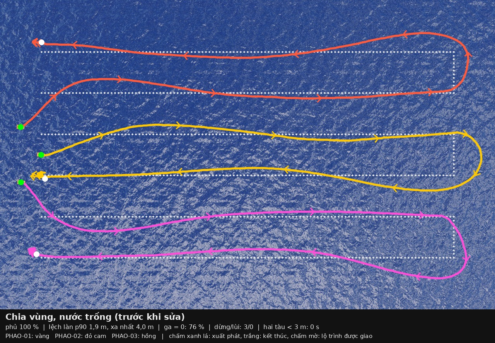<figcaption><b>Chia vùng, nước trống, vòng 1.</b> Ga bị cắt liên tục, phao lượn quanh làn.</figcaption></figure>
      <figure><figcaption><b>Vòng 2.</b> Thẳng trên làn; còn lệch ở khúc quay đầu (bán kính quay khoảng 2–3 m).</figcaption></figure>
      <figure>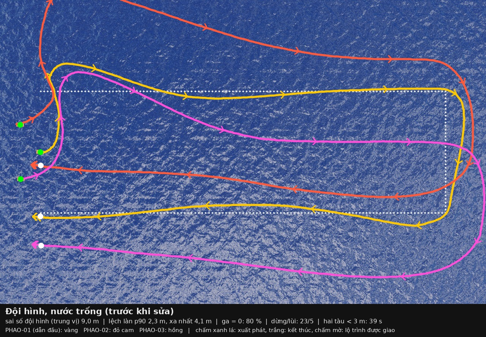<figcaption><b>Đội hình, nước trống, vòng 1.</b> Tàu theo tụt lại, sai số 9 m.</figcaption></figure>
      <figure><figcaption><b>Vòng 2.</b> Tàu dẫn đầu chạy chậm lại, tàu theo giữ chỗ, sai số 2,6 m.</figcaption></figure>
      <figure><figcaption><b>Beacon 2,4 s</b> (chỉ mô phỏng): 2,0 m, không lần nào hai tàu sát nhau.</figcaption></figure>
      <figure>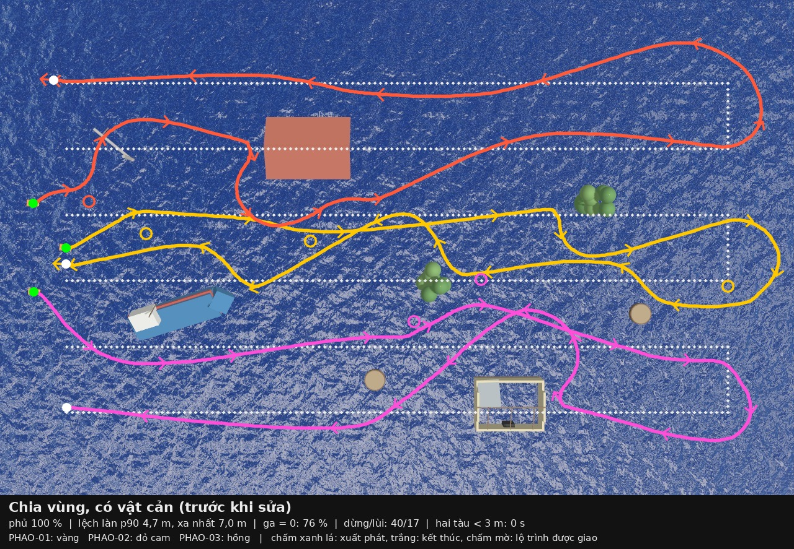<figcaption><b>Chia vùng, có vật cản, vòng 1.</b></figcaption></figure>
      <figure><figcaption><b>Vòng 2.</b> PHAO-02 qua sát phía Nam nhà ngập; phủ vùng thấp hơn vì phao chạy chậm hơn.</figcaption></figure>
      <figure>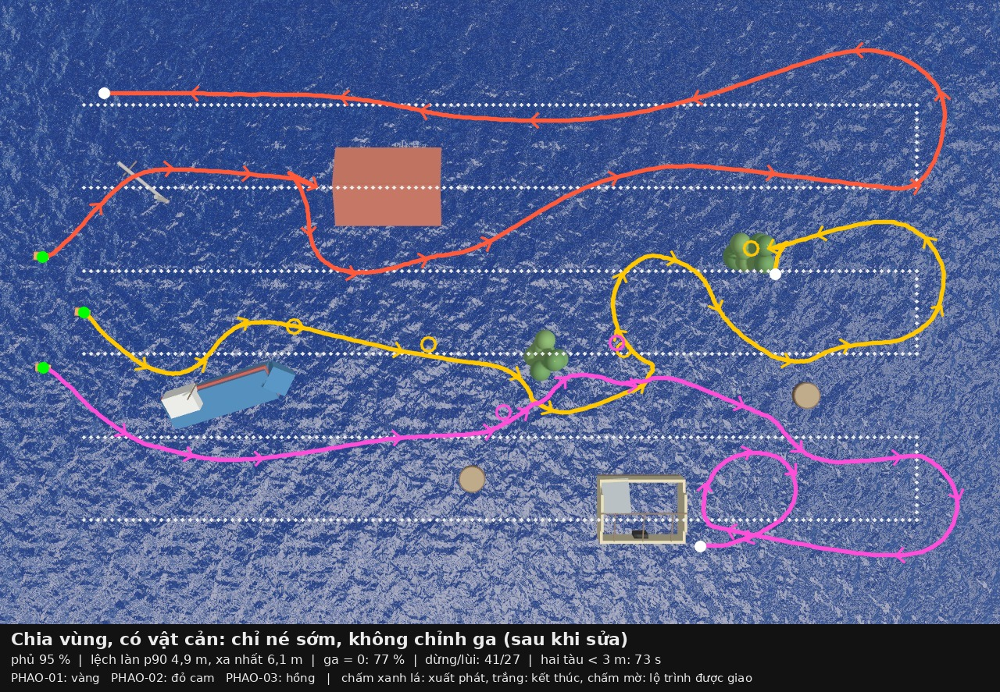<figcaption><b>Chỉ né sớm, tắt chỉnh ga</b>, để tách riêng tác dụng của phần né sớm.</figcaption></figure>
      <figure>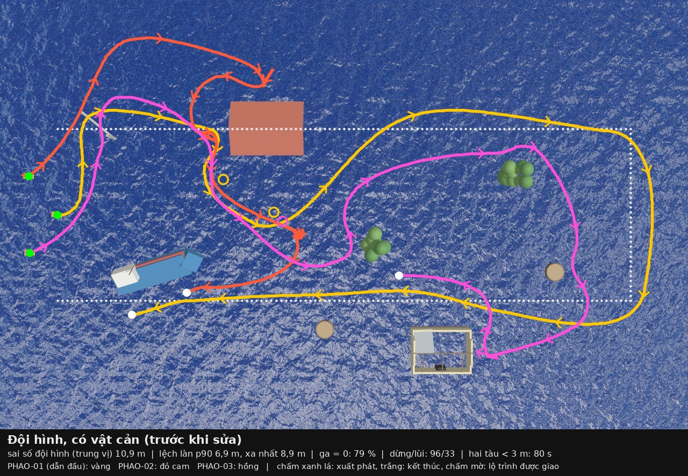<figcaption><b>Đội hình, có vật cản, vòng 1.</b> Đội dồn lại để tránh nhà, PHAO-02 tụt lại.</figcaption></figure>
      <figure><figcaption><b>Vòng 2.</b> Lệch xa nhất 2,0 m (trước 8,9 m), dừng/lùi 20/10 (trước 96/33).</figcaption></figure>
      <figure><figcaption><b>Chia vùng, hoàn chỉnh, vòng 2.</b> Tìm 7/8 người, nửa số người sau 265 s. Vòng 1: <code>img/v2_05_…_a_truoc.jpg</code>.</figcaption></figure>
      <figure><figcaption><b>Đội hình, hoàn chỉnh, vòng 2.</b> Sai số 2,8 m, tìm 5/8 người. Vòng 1: <code>img/v2_06_…_a_truoc.jpg</code>.</figcaption></figure>
    </div>
    <div class="figs">
      <figure><video src="video/web_admin_chia_vung_phong_to_v2.mp4" controls muted playsinline preload="metadata"></video><figcaption><b>Web admin, chia vùng, vòng 2</b> (×8). Bản đầy đủ: <code>video/web_admin_chia_vung_v2.mp4</code>; video từ trên xuống: <code>gazebo_tren_xuong_chia_vung_v2.mp4</code>.</figcaption></figure>
      <figure><video src="video/web_admin_doi_hinh_phong_to_v2.mp4" controls muted playsinline preload="metadata"></video><figcaption><b>Web admin, đội hình, vòng 2</b> (×8). Cửa sổ Gazebo 3D: <code>gazebo_gui_*_v2.mp4</code> (quay ở lần có cửa sổ, chỉ để xem hình).</figcaption></figure>
    </div>

    <h3>Điều mô phỏng cho thấy, cần biết trước khi tin số liệu</h3>
    <ul class="prose">
      <li><b>Phao mô phỏng khỏe hơn nhiều so với lệnh.</b> Ở 10 % ga nó vẫn chạy 0,65–0,75 m/s, nên chỉnh ga chạm trần 5 lần mà vẫn nhanh hơn 0,5 m/s, và ở mức ga đó F407 bẻ lái yếu. Lực đẩy trong model (<code>--rear-thrust-n 15</code>) chỉ là ước đoán. Cần đo tàu thật: tốc độ ở 10/20/30/50 % ga trên nước lặng, rồi chỉnh mô hình theo, trước khi tinh chỉnh tiếp.</li>
      <li><b>Mở cửa sổ Gazebo làm mô phỏng chạy chậm còn khoảng 0,35 lần thời gian thực</b>, còn Pi vẫn tính theo đồng hồ thật. Chỉnh ga không kịp học, ga bị cắt hơn 1000 lần. Vì vậy cả hai lần "hoàn chỉnh" của vòng 1 đều bị ảnh hưởng. Ở vòng 2, số liệu lấy từ các lần không mở cửa sổ; video cửa sổ quay riêng.</li>
      <li><b>LiDAR chỉ được gom cụm trong 5 m</b> (<code>main.py:102</code>: <code>influence_distance_m + 2</code>), nên phần né sớm thấy vật cản muộn hơn tầm nhìn trước 5,75 m của nó. Muốn né gọn hơn thì phải tăng tầm này (và tách nó khỏi <code>influence_distance_m</code>).</li>
      <li>Ở world hoàn chỉnh, ga = 0 vẫn khoảng 76 % thời gian, vì phao dành nhiều thời gian tiến lại gần người, mà tốc độ tiếp cận chưa được chỉnh ga.</li>
      <li>Hai lần chạy bị treo vì WSL quá tải (track mất 211 s và 556 s); cả hai đã chạy lại và không được tính.</li>
    </ul>
  </section>

  <section>
    <h2>Kết luận nhanh</h2>
    <div class="verdicts">
      <div class="verdict"><span class="pill good">Đúng sau khi sửa</span><b>Chia vùng</b><span>Mỗi phao một dải 2 làn, không chồng nhau, phủ 100 % vùng, không lần nào hai phao sát nhau. Với 8 người: tìm đủ 8/8, người cuối cùng sau 525 s.</span></div>
      <div class="verdict"><span class="pill warn">Đúng trên làn, còn hạn chế</span><b>Đội hình hàng ngang</b><span>Đã hết cảnh phao theo đổi bên và cắt ngang phao dẫn đầu ở cuối làn. Còn chậm vào chỗ lúc xuất phát, và vỡ đội hình khi có nhà chắn ngang làn.</span></div>
      <div class="verdict"><span class="pill bad">Cần xem</span><b>Báo người giả</b><span>World có vật cản nhưng không có người vẫn nhận 3–6 báo VICTIM_FOUND. Bộ nhận dạng nhầm vật cản thành người.</span></div>
    </div>
  </section>

  <section>
    <h2>Ba world</h2>
    <p class="prose">Ba world chung một vùng tìm kiếm (x 0..60 m, y −18..18 m), nên các hình đường đi đặt cạnh nhau được. Mỗi world có thêm một camera nhìn thẳng xuống, dùng cho video từ trên cao.</p>
    <div class="table-wrap"><table>
      <thead><tr><th>World</th><th>Vật cản</th><th>Người</th><th>Để làm gì</th></tr></thead>
      <tbody>
        <tr><td><code>vedc_wide_empty.sdf</code></td><td>không</td><td>không</td><td>Chứng minh thuật toán chạy đúng: không gì để tránh, không ai để dừng lại</td></tr>
        <tr><td><code>vedc_wide_obstacles.sdf</code></td><td>nhà ngập, nhà sập mái, xuồng chìm, 2 bụi tre, cột gãy, 2 thúng</td><td>không</td><td>LiDAR tránh vật cản trong khi vẫn giữ kế hoạch</td></tr>
        <tr><td><code>vedc_wide_full.sdf</code></td><td>như trên</td><td>8 người, cách vật cản ≥ 5 m</td><td>Mô phỏng hoàn chỉnh</td></tr>
      </tbody>
    </table></div>
    <div class="legend"><span><i class="sw" style="background:var(--p1)"></i>PHAO-01</span><span><i class="sw" style="background:var(--p2)"></i>PHAO-02</span><span><i class="sw" style="background:var(--p3)"></i>PHAO-03</span><span>nét chấm: dải hoặc lộ trình được giao · vòng nâu: vật cản · ×: người · vòng rỗng: phao báo VICTIM_FOUND · mũi tên: 30 s một mũi</span></div>
  </section>

  <section>
    <h2>Nước trống: tìm lỗi và sửa</h2>

    <h3>Chia vùng</h3>
    <div class="figs">
      <figure>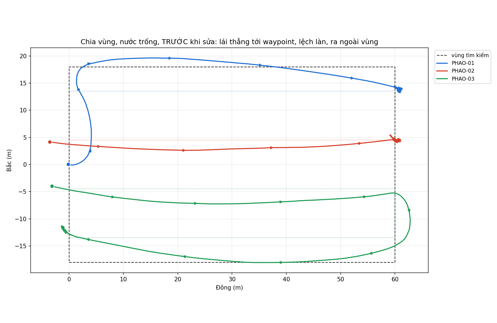<figcaption><b>Trước.</b> Phao lái thẳng tới waypoint cách 60 m: sóng đẩy lệch làn 3–5 m, PHAO-01 ra ngoài vùng. Dải chia 1–1–2 làn, vì làn 8 m chỉ được 4 làn cho 3 phao.</figcaption></figure>
      <figure>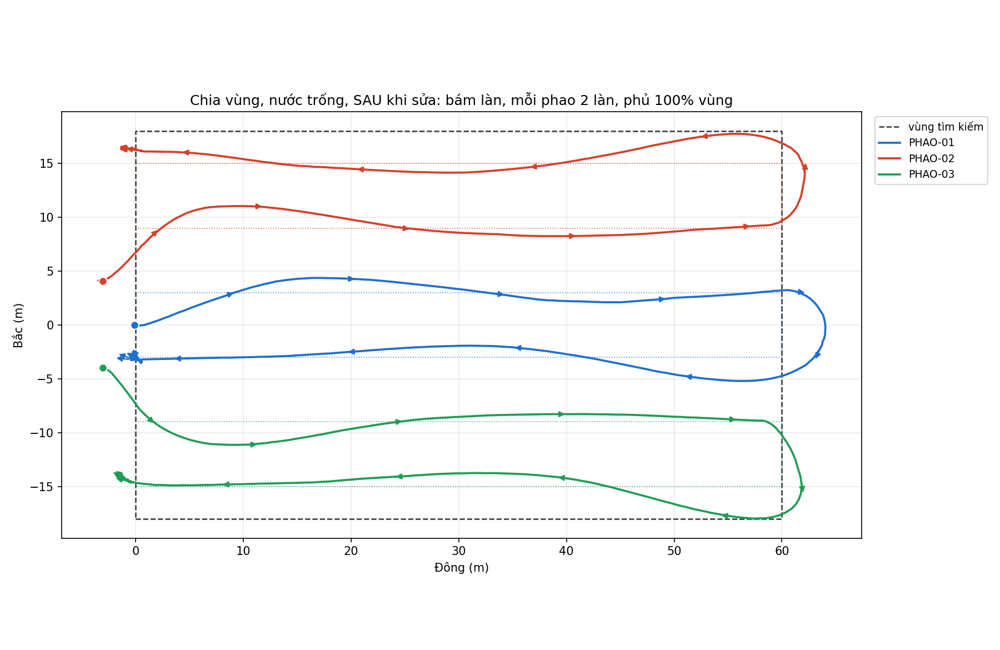<figcaption><b>Sau.</b> Bám làn; làn 6 m chia đều 2 làn mỗi phao. Phủ <b>100 %</b> vùng (trước: 93,4 %), mỗi phao nằm trong dải của mình 96–100 % thời gian, <b>0 s</b> hai phao sát nhau (trước: 9 s).</figcaption></figure>
    </div>
    <div class="fix">
      <b>Sửa 1. Bám đường làn thay vì lái thẳng tới waypoint</b>
      <span>Pi lái tới một điểm nằm trên đoạn từ waypoint trước tới waypoint hiện tại, cách hình chiếu của phao 5 m về phía trước (pure pursuit). Đoạn đầu tiên và <code>lookahead_m: 0</code> giữ cách cũ.</span>
      <span class="where">Rasp_Pi/modules/waypoints.py Route.aim · mission.py · config/settings.yaml mission.lookahead_m · test_waypoints.py</span>
    </div>
    <div class="fix">
      <b>Sửa 2. Gán dải cho phao theo tổng quãng đường nhỏ nhất</b>
      <span>Cách cũ gán tham lam (cặp phao–dải gần nhất trước) có thể bắt phao ở giữa sang dải xa, cắt ngang đường phao bên cạnh. Giờ thử mọi cách gán (đội có tối đa vài phao) và lấy tổng nhỏ nhất. Đường đi của cách gán có tổng nhỏ nhất thì không cắt nhau.</span>
      <span class="where">esp32-lora-station/cloud/src/fleetplan.js planSectors · test/fleetplan.test.mjs</span>
    </div>

    <h3>Đội hình hàng ngang</h3>
    <div class="figs three">
      <figure>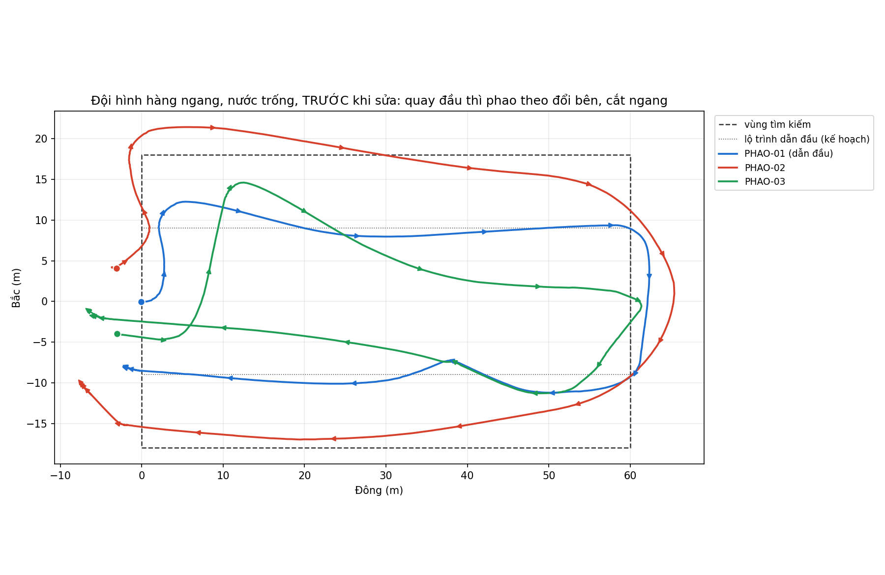<figcaption><b>Trước.</b> Chỗ của phao theo tính theo mũi phao dẫn đầu. Cuối làn, phao dẫn đầu quay đầu thì "bên phải" đổi sang phía bên kia: PHAO-02 vòng rộng ra ngoài, PHAO-03 cắt ngang phao dẫn đầu.</figcaption></figure>
      <figure>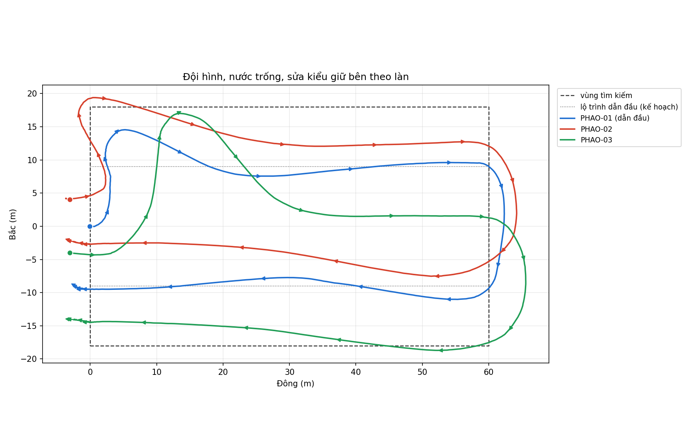<figcaption><b>Sửa kiểu giữ bên theo làn.</b> Pi nhận ra làn và lần quay đầu, rồi đổi dấu. Cả đội tịnh tiến song song qua khúc quay; làn 2 xếp đúng y = −3 / −9 / −15.</figcaption></figure>
      <figure>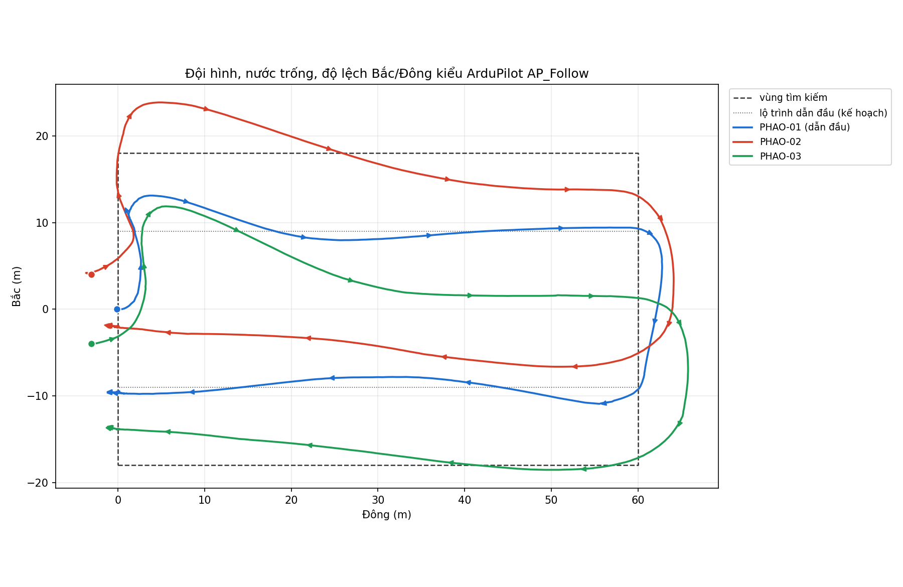<figcaption><b>Kiểu ArduPilot AP_Follow.</b> Trạm gửi chỗ của phao theo bằng mét về Bắc và Đông (<code>FOLL_OFS_TYPE = 0</code>). Không cần đoán làn, lúc xuất phát cũng không bị kéo lên trước.</figcaption></figure>
    </div>
    <div class="table-wrap"><table>
      <thead><tr><th>Cách giữ chỗ</th><th>Cuối làn</th><th>Lúc xuất phát</th><th>Hai phao &lt; 3 m</th><th>Sai số chỗ (trung vị)</th></tr></thead>
      <tbody>
        <tr><td>Cũ: theo mũi phao dẫn đầu</td><td><span class="bad">đổi bên, cắt ngang</span></td><td>lộn xộn</td><td class="n"><span class="bad">112 s</span></td><td class="n">6,2 m</td></tr>
        <tr><td>Giữ bên theo làn (Pi tự nhận làn)</td><td><span class="good">tịnh tiến song song</span></td><td><span class="warn">PHAO-03 cắt qua phao dẫn đầu</span></td><td class="n">54 s</td><td class="n">8,0 m</td></tr>
        <tr><td><b>Bắc/Đông kiểu AP_Follow</b> (dùng cho lần chạy có vật cản và lần chạy hoàn chỉnh)</td><td><span class="good">tịnh tiến song song</span></td><td>bám sau đuôi, không cắt</td><td class="n"><b>39 s</b></td><td class="n">9,0 m</td></tr>
      </tbody>
    </table></div>
    <p class="prose">Sai số trung vị không giảm vì phao theo <b>không chạy nhanh hơn phao dẫn đầu được</b>: cả hai cùng chạm trần ga 50 % của F407, và <code>navigation.py</code> còn chặn ở <code>max_speed_mps</code>. Lệch khỏi chỗ là mất khoảng một phút mới vào lại. AP_Follow cho phao theo chạy nhanh hơn phao dẫn đầu; muốn làm như vậy thì phao dẫn đầu phải chạy chậm lại khi đi đội hình. Việc đó cần trạm báo cho Pi biết nó là phao dẫn đầu, nên chưa làm.</p>
    <div class="fix">
      <b>Sửa 3. Phao theo giữ nguyên phía trên mặt nước khi phao dẫn đầu quay đầu</b>
      <span>Hai cách, chọn bằng <code>formation.offsets</code> trên Pi và <code>offsets: "ned"</code> trong kế hoạch gửi lên Worker:</span>
      <ul>
        <li><b>Mặc định (<code>bow</code>):</b> Pi nhận làn là hướng phao dẫn đầu giữ lâu nhất, bỏ qua đoạn nối ngắn giữa hai làn, và lật dấu khi làn mới ngược làn cũ (&gt; 150°). Dùng được cho cả hàng dọc và chữ V.</li>
        <li><b><code>ned</code>:</b> Hub tính chỗ thành mét Bắc/Đông theo làn đầu và gửi trong hai trường có sẵn. Firmware ESP32 và F407 chuyển nguyên hai số này, nên không phải sửa firmware. Chỉ hợp với hàng ngang.</li>
      </ul>
      <span class="where">Rasp_Pi/modules/formation.py · test_formation.py · cloud/src/fleetplan.js nedOffsets · hub.js · worker.js sanitizePlan · sim/tools/fleet_sim.sh --formation-offsets</span>
    </div>
  </section>

  <section>
    <h2>Có vật cản, không có người</h2>
    <div class="figs">
      <figure>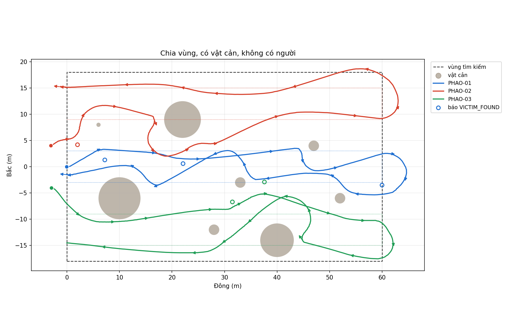<figcaption><b>Chia vùng.</b> Phao tránh nhà và xuồng chìm bằng LiDAR rồi quay về làn. Phủ 99,7 %, 0 s sát nhau, cả ba chạy hết dải. Có 6 báo người giả.</figcaption></figure>
      <figure>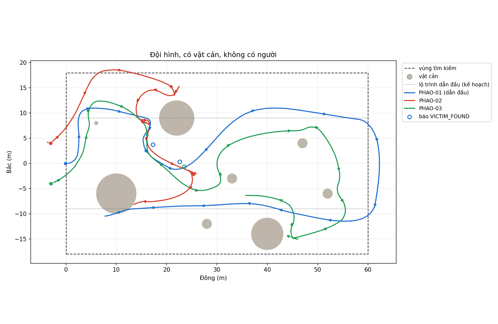<figcaption><b>Đội hình.</b> Nhà 7 × 5 m nằm ngay trên làn đầu của phao dẫn đầu: cả đội dồn lại để tránh, PHAO-02 tụt lại rồi dừng. Phủ 88,4 %, 80 s sát nhau.</figcaption></figure>
    </div>
  </section>

  <section>
    <h2>Mô phỏng hoàn chỉnh: vật cản và 8 người</h2>
    <div class="figs">
      <figure>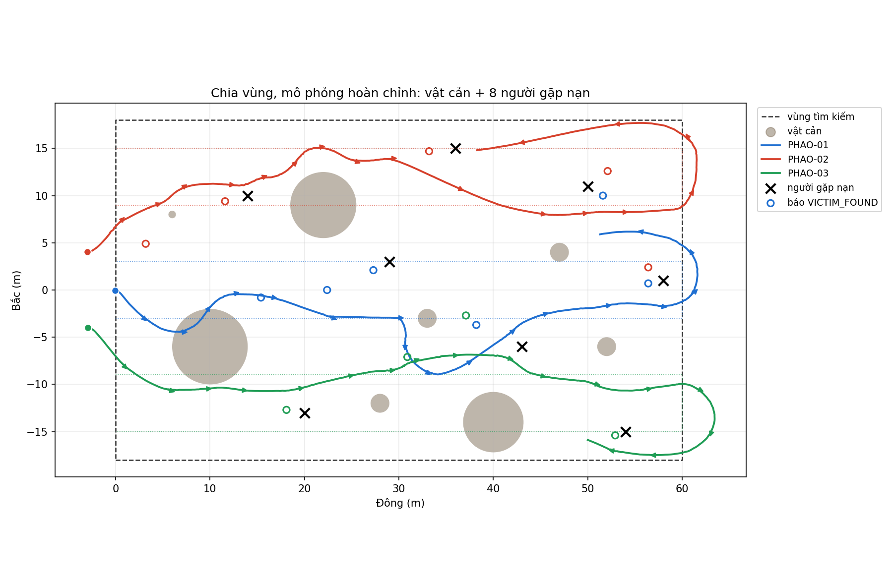<figcaption><b>Chia vùng.</b> Tìm đủ <b>8/8</b> người: nửa số người sau 278 s, người cuối sau 525 s. Mỗi người giữ 20 s, và Gazebo có cửa sổ chạy chậm hơn, nên PHAO-02 và PHAO-03 chưa chạy hết dải trong 600 s.</figcaption></figure>
      <figure>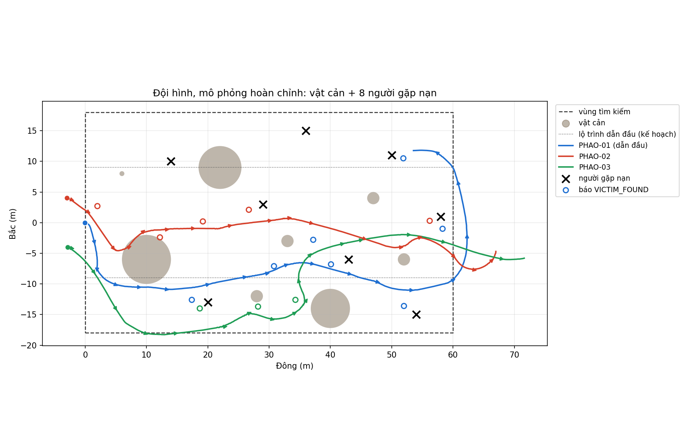<figcaption><b>Đội hình.</b> Tìm <b>6/8</b> người, phủ 69,3 %. Làn đầu giữ được hàng ngang (sai số trung vị 4,6 m). PHAO-03 vòng lên phía Bắc để tránh nhà kho ở (40, −14) và rời chỗ.</figcaption></figure>
    </div>
    <div class="figs">
      <figure><video src="video/web_admin_chia_vung_phong_to.mp4" controls muted playsinline preload="metadata"></video><figcaption><b>Web admin, chia vùng</b> (cắt quanh vùng tìm kiếm, ×8). Bản đầy đủ: <code>video/web_admin_chia_vung.mp4</code>.</figcaption></figure>
      <figure><video src="video/web_admin_doi_hinh_phong_to.mp4" controls muted playsinline preload="metadata"></video><figcaption><b>Web admin, đội hình</b> (×8). Bản đầy đủ: <code>video/web_admin_doi_hinh.mp4</code>.</figcaption></figure>
    </div>
    <div class="figs three">
      <figure>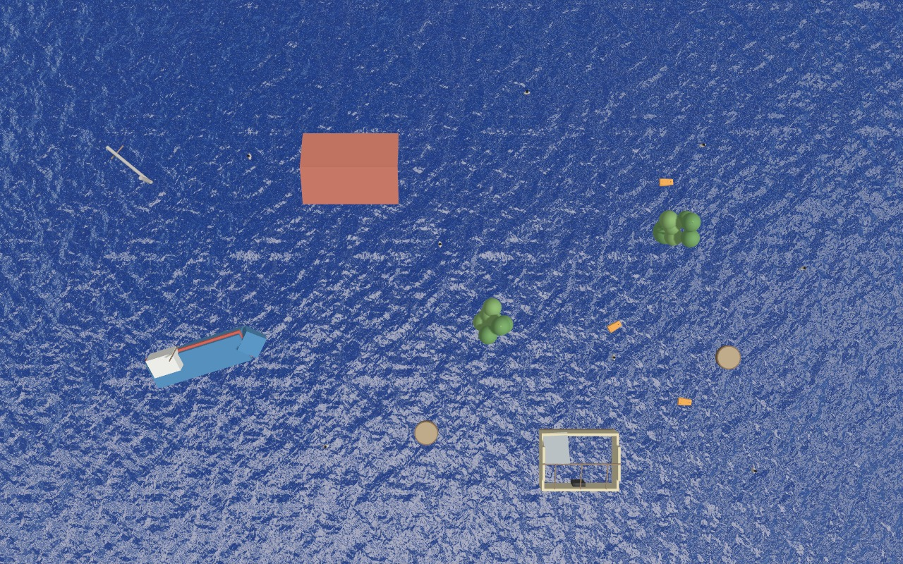<figcaption>Camera Gazebo nhìn thẳng xuống, giữa lần chạy chia vùng. Video ×8: <code>video/gazebo_tren_xuong_*.mp4</code>.</figcaption></figure>
      <figure>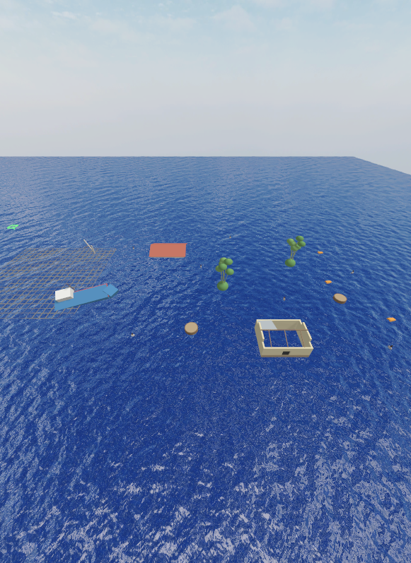<figcaption>Cửa sổ Gazebo 3D, nhìn chéo từ phía Nam. Video ×4: <code>video/gazebo_gui_*.mp4</code>.</figcaption></figure>
      <figure>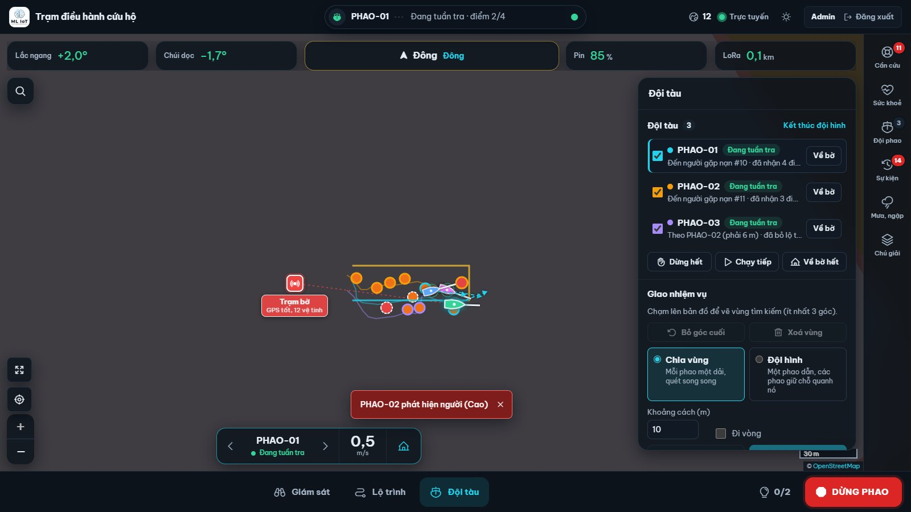<figcaption>Web admin toàn màn hình, tab Đội tàu, giữa lần chạy đội hình.</figcaption></figure>
    </div>
  </section>

  <section>
    <h2>Số liệu từng lần chạy</h2>
    <div class="table-wrap"><table>
      <thead><tr><th>Lần chạy</th><th>World</th><th>Chế độ</th><th>Phủ vùng</th><th>&lt; 3 m</th><th>Sai số đội hình</th><th>Người tìm thấy</th><th>Ghi chú</th></tr></thead>
      <tbody>
        <tr><td>A0 trước sửa</td><td>trống</td><td>chia vùng</td><td class="n">93,4 %</td><td class="n">9 s</td><td class="n">—</td><td class="n">—</td><td>trong dải 84 / 100 / 93 %</td></tr>
        <tr><td><b>A1</b></td><td>trống</td><td>chia vùng</td><td class="n"><span class="good">100 %</span></td><td class="n"><span class="good">0 s</span></td><td class="n">—</td><td class="n">—</td><td>trong dải 96 / 100 / 100 %, chạy hết dải</td></tr>
        <tr><td>A0 trước sửa</td><td>trống</td><td>đội hình</td><td class="n">99,1 %</td><td class="n"><span class="bad">112 s</span></td><td class="n">6,2 m</td><td class="n">—</td><td>đổi bên khi quay đầu</td></tr>
        <tr><td>A2</td><td>trống</td><td>đội hình (làn)</td><td class="n">100 %</td><td class="n">54 s</td><td class="n">8,0 m</td><td class="n">—</td><td></td></tr>
        <tr><td><b>A3</b></td><td>trống</td><td>đội hình (NED)</td><td class="n">99,9 %</td><td class="n">39 s</td><td class="n">9,0 m</td><td class="n">—</td><td></td></tr>
        <tr><td>B1</td><td>vật cản</td><td>chia vùng</td><td class="n">99,7 %</td><td class="n"><span class="good">0 s</span></td><td class="n">—</td><td class="n"><span class="warn">6 báo giả</span></td><td>trong dải 95 / 78 / 93 %</td></tr>
        <tr><td>B2</td><td>vật cản</td><td>đội hình (NED)</td><td class="n">88,4 %</td><td class="n">80 s</td><td class="n">10,9 m</td><td class="n"><span class="warn">3 báo giả</span></td><td>PHAO-02 dừng giữa chừng</td></tr>
        <tr><td><b>C1</b></td><td>hoàn chỉnh</td><td>chia vùng</td><td class="n">90,0 %</td><td class="n">28 s</td><td class="n">—</td><td class="n"><span class="good">8 / 8</span></td><td>người cuối sau 525 s</td></tr>
        <tr><td><b>C2</b></td><td>hoàn chỉnh</td><td>đội hình (NED)</td><td class="n">69,3 %</td><td class="n">59 s</td><td class="n">4,6 m</td><td class="n">6 / 8</td><td>nửa số người sau 397 s</td></tr>
      </tbody>
    </table></div>
    <p class="prose" style="font-size:.9rem;color:var(--muted)">Phủ vùng: phần diện tích nằm trong 6 m của một đường đi. &lt; 3 m: tổng số giây có hai phao gần nhau dưới 3 m. Sai số đội hình: khoảng cách trung vị từ phao theo tới chỗ của nó, sau phút đầu. Số liệu gốc: <code>so_lieu_cac_lan_chay.json</code>.</p>
  </section>

  <section>
    <h2>Còn lại và rủi ro</h2>
    <ul class="prose">
      <li><b>Đội hình chậm vào chỗ</b>: đã sửa ở vòng 2 (phao dẫn đầu chạy 0,7 lần tốc độ tối đa; sai số 9,0 → 2,6 m trên nước trống).</li>
      <li><b>Lực đẩy của phao mô phỏng</b> chỉ là ước đoán và có vẻ mạnh hơn tàu thật nhiều. Cần đo tốc độ tàu thật theo % ga để chỉnh mô hình, trước khi tinh chỉnh tiếp phần chỉnh ga và né vật cản.</li>
      <li><b>Đội hình gặp vật cản lớn trên làn</b> thì vỡ: mỗi phao tránh riêng, không có luật nhường nhau.</li>
      <li><b>Báo người giả</b> ở world không có người (B1: 6, B2: 3). Cần xem camera nhầm vật cản nào.</li>
      <li><b>Video cửa sổ Gazebo khổ dọc 580 × 796</b>: <code>~/.gz/sim/8/gui.config</code> để cửa sổ 1000 px, và ghi màn hình cửa sổ WSLg ra màu trắng. Hai video này ghép từ ảnh chụp <code>/gui/screenshot</code>. Muốn khổ ngang thì đặt cửa sổ rộng trong <code>gui.config</code> rồi chạy lại C1/C2.</li>
      <li><b>Thay đổi chạm tới phao thật</b> (bám làn, giữ bên đội hình) mới chỉ thử trong mô phỏng và unit test. Pi: 269 test qua; cloud: <code>npm test</code> 82 test qua (<code>auth.test.mjs</code> lỗi sẵn từ trước, không nằm trong <code>npm test</code>).</li>
      <li><b>Chưa commit gì.</b> <code>Rasp_Pi/config/boat_stm32.yaml</code> có thay đổi từ trước (tốc độ 0,5 m/s); mô phỏng đã chạy ở tốc độ đó.</li>
    </ul>
  </section>

  <section>
    <h2>File đã sửa và thêm</h2>
    <ul class="files">
      <li>Rasp_Pi/modules/waypoints.py</li><li>Rasp_Pi/modules/mission.py</li><li>Rasp_Pi/modules/formation.py</li>
      <li>Rasp_Pi/config/settings.yaml</li><li>Rasp_Pi/tests/test_waypoints.py</li><li>Rasp_Pi/tests/test_formation.py</li>
      <li>esp32-lora-station/cloud/src/fleetplan.js</li><li>esp32-lora-station/cloud/src/hub.js</li><li>esp32-lora-station/cloud/src/worker.js</li>
      <li>esp32-lora-station/cloud/test/fleetplan.test.mjs</li><li>sim/tools/fleet_compare.py (plot, --gui, --offsets)</li><li>sim/tools/fleet_sim.sh</li>
      <li>+ sim/tools/record_admin.mjs</li><li>+ sim/worlds/vedc_wide_empty.sdf</li><li>+ sim/worlds/vedc_wide_obstacles.sdf</li><li>+ sim/worlds/vedc_wide_full.sdf</li><li>+ media/simulation/fleet/</li>
    </ul>
    <p class="prose">Vòng 2 thêm:</p>
    <ul class="files">
      <li>Rasp_Pi/modules/navigation.py (chỉnh ga, né sớm, speed_limit)</li><li>Rasp_Pi/modules/state_store.py</li><li>Rasp_Pi/modules/mission.py (tàu dẫn đầu)</li>
      <li>Rasp_Pi/config/settings.yaml (speed_trim, avoid_*)</li><li>Rasp_Pi/tests/test_navigation.py</li><li>Rasp_Pi/tests/test_formation.py</li>
      <li>esp32-lora-station/cloud/src/hub.js</li><li>esp32-lora-station/cloud/test/hub.test.mjs</li><li>docs/fleet-control.md</li>
      <li>sim/tools/fleet_compare.py (plot --bg, chỉ số lệch làn, --fast-beacon)</li><li>sim/tools/fleet_sim.sh (--fast-beacon)</li><li>sim/tools/lora_radio.py</li><li>sim/tools/stm32_board_sim.py</li>
    </ul>
    <p class="prose">Test: Pi 272 passed, 2 skipped; cloud <code>npm test</code> 82/82.</p>
    <p class="prose">Vòng 3 thêm: <code>sim/tools/fleet_sim.sh --heading-gains</code>, <code>fleet_compare.py run --heading-gains</code> (ghi vào <code>scenario.json</code>), dòng log "heading gains" của <code>stm32_board_sim.py</code>. Hệ số PID và các script thử bước của phiên PID: <code>media/simulation/pid/</code>.</p>
  </section>
</main>
